Last updated: 2026-10-13
Checks: 7 0
Knit directory: amniosinglecell/
This reproducible R Markdown analysis was created with workflowr (version 1.7.2). The Checks tab describes the reproducibility checks that were applied when the results were created. The Past versions tab lists the development history.
Great! Since the R Markdown file has been committed to the Git repository, you know the exact version of the code that produced these results.
Great job! The global environment was empty. Objects defined in the global environment can affect the analysis in your R Markdown file in unknown ways. For reproduciblity it’s best to always run the code in an empty environment.
The command set.seed(20220125) was run prior to running
the code in the R Markdown file. Setting a seed ensures that any results
that rely on randomness, e.g. subsampling or permutations, are
reproducible.
Great job! Recording the operating system, R version, and package versions is critical for reproducibility.
Nice! There were no cached chunks for this analysis, so you can be confident that you successfully produced the results during this run.
Great job! Using relative paths to the files within your workflowr project makes it easier to run your code on other machines.
Great! You are using Git for version control. Tracking code development and connecting the code version to the results is critical for reproducibility.
The results in this page were generated with repository version 1fe053c. See the Past versions tab to see a history of the changes made to the R Markdown and HTML files.
Note that you need to be careful to ensure that all relevant files for
the analysis have been committed to Git prior to generating the results
(you can use wflow_publish or
wflow_git_commit). workflowr only checks the R Markdown
file, but you know if there are other scripts or data files that it
depends on. Below is the status of the Git repository when the results
were generated:
Ignored files:
Ignored: .DS_Store
Ignored: .Rhistory
Ignored: .Rproj.user/
Ignored: analysis/generate_site.R
Ignored: analysis/knit_docs.R
Ignored: analysis/run_as_job.R
Ignored: analysis/sccomp_draws_files/
Ignored: celltypist/.DS_Store
Ignored: data/
Ignored: excluded_analysis/
Ignored: output/
Ignored: renv/.DS_Store
Ignored: renv/library/
Ignored: renv/staging/
Ignored: sccomp_draws_files/
Untracked files:
Untracked: AmnioSC_Manuscript_Claude/
Untracked: claude_log/
Note that any generated files, e.g. HTML, png, CSS, etc., are not included in this status report because it is ok for generated content to have uncommitted changes.
These are the previous versions of the repository in which changes were
made to the R Markdown
(analysis/AmnioSC_workflow_optref_dge_ruvseq.cluster_0.Rmd)
and HTML
(docs/AmnioSC_workflow_optref_dge_ruvseq.cluster_0.html)
files. If you’ve configured a remote Git repository (see
?wflow_git_remote), click on the hyperlinks in the table
below to view the files as they were in that past version.
| File | Version | Author | Date | Message |
|---|---|---|---|---|
| Rmd | 1fe053c | Calandra Grima | 2026-10-13 | wflow_publish(here("analysis", "AmnioSC_workflow_optref_dge_ruvseq.cluster_0.Rmd")) |
| html | eea5a46 | Calandra Grima | 2026-10-13 | Build site. |
| Rmd | 81f481f | Calandra Grima | 2026-10-13 | wflow_publish(here("analysis", "AmnioSC_workflow_optref_dge_ruvseq.cluster_0.Rmd")) |
| html | 3c19b27 | Calandra Grima | 2026-10-13 | Build site. |
| Rmd | 78a00ba | Calandra Grima | 2026-10-13 | wflow_publish(here("analysis", "AmnioSC_workflow_optref_dge_ruvseq.cluster_0.Rmd")) |
| html | abd2114 | Calandra Grima | 2026-10-02 | Build site. |
| Rmd | f734023 | Calandra Grima | 2026-10-02 | wflow_publish(here("analysis", "AmnioSC_workflow_optref_dge_ruvseq.cluster_0.Rmd")) |
| html | 626f17f | Calandra Grima | 2026-09-30 | Build site. |
| Rmd | 1671b2d | Calandra Grima | 2026-09-30 | wflow_publish(here("analysis", "AmnioSC_workflow_optref_dge_ruvseq.cluster_0.Rmd")) |
| html | 4e7d782 | Calandra Grima | 2026-09-28 | Build site. |
| Rmd | 0fb1b27 | Calandra Grima | 2026-09-28 | wflow_publish(here("analysis", "AmnioSC_workflow_optref_dge_ruvseq.cluster_0.Rmd")) |
| html | aa8cf36 | Calandra Grima | 2026-09-16 | Build site. |
| Rmd | fd7a4da | Calandra Grima | 2026-09-16 | wflow_publish(here("analysis", "AmnioSC_workflow_optref_dge_ruvseq.cluster_0.Rmd")) |
| html | e069b3a | Calandra Grima | 2026-09-04 | Build site. |
| Rmd | 248a8f5 | Calandra Grima | 2026-09-04 | wflow_publish(here("analysis", "AmnioSC_workflow_optref_dge_ruvseq.cluster_0.Rmd")) |
| html | f381dd5 | Calandra Grima | 2026-08-11 | Build site. |
| Rmd | c392a6a | Calandra Grima | 2026-08-11 | wflow_publish(here("analysis", "AmnioSC_workflow_optref_dge_ruvseq.cluster_0.Rmd")) |
| html | 3ee0389 | Calandra Grima | 2026-08-05 | Build site. |
| html | 522775a | Calandra Grima | 2026-08-04 | Build site. |
| Rmd | 4f93e8f | Calandra Grima | 2026-08-04 | wflow_publish(here("analysis", "AmnioSC_workflow_optref_dge_ruvseq.cluster_0.Rmd")) |
| html | f8dcbb0 | calandra.grima | 2026-04-15 | Build site. |
| Rmd | 21e2aff | calandra.grima | 2026-04-15 | wflow_publish(here("analysis", "AmnioSC_workflow_optref_dge_ruvseq.cluster_0.Rmd")) |
| html | a9957da | calandra.grima | 2026-02-19 | Build site. |
| Rmd | d77271f | calandra.grima | 2026-02-19 | wflow_publish(here("analysis", "AmnioSC_workflow_optref_dge_ruvseq.cluster_0.Rmd")) |
| html | b42cc88 | calandra.grima | 2026-02-16 | Build site. |
| Rmd | 6f5985c | calandra.grima | 2026-02-16 | wflow_publish(here("analysis", "AmnioSC_workflow_optref_dge_ruvseq.cluster_0.Rmd")) |
| html | 1ad3e8b | Calandra Grima | 2025-11-21 | Build site. |
| html | e778664 | Calandra Grima | 2025-11-14 | Build site. |
| Rmd | 028e2dd | Calandra Grima | 2025-11-14 | Update analysis workflow to use new clustering approach |
| html | 25e8e6f | Calandra Grima | 2025-08-27 | Build site. |
| Rmd | 896b81a | Calandra Grima | 2025-08-27 | wflow_publish(here("analysis", "AmnioSC_workflow_optref_dge_ruvseq.cluster_0.Rmd")) |
| html | 2c6d248 | Calandra Grima | 2025-08-27 | Build site. |
| Rmd | 6322071 | Calandra Grima | 2025-08-27 | wflow_publish(here("analysis", "AmnioSC_workflow_optref_dge_ruvseq.cluster_0.Rmd")) |
| html | 6f39b64 | Calandra Grima | 2025-04-14 | Build site. |
| Rmd | a8683f0 | Calandra Grima | 2025-04-11 | wflow_publish(here("analysis", "AmnioSC_workflow_optref_dge_ruvseq.cluster_0.Rmd")) |
| html | 977d3e9 | Calandra Grima | 2025-04-07 | Build site. |
| Rmd | 591e10d | Calandra Grima | 2025-04-07 | wflow_publish(here("analysis", "AmnioSC_workflow_optref_dge_ruvseq.cluster_0.Rmd")) |
| html | fabfd92 | Calandra Grima | 2025-04-04 | Build site. |
| Rmd | 58cde16 | Calandra Grima | 2025-04-04 | Clean up files and remove excluded files from git |
| html | 79240df | Calandra Grima | 2025-04-02 | Build site. |
| Rmd | ca3e58b | Calandra Grima | 2025-04-02 | wflow_publish(here("analysis", "AmnioSC_workflow_optref_dge_ruvseq.cluster_0.Rmd")) |
| html | 6b756ec | Calandra Grima | 2025-03-28 | Build site. |
| html | a829e36 | Calandra Grima | 2025-03-27 | Build site. |
| html | e7b52ee | Calandra Grima | 2025-02-19 | Build site. |
| Rmd | ef204d6 | Calandra Grima | 2025-02-19 | wflow_publish(here("analysis", "AmnioSC_workflow_optref_dge_ruvseq.cluster_0.Rmd")) |
| html | bfd96f3 | Calandra Grima | 2025-02-19 | Build site. |
| Rmd | 3e01381 | Calandra Grima | 2025-02-19 | wflow_publish(here("analysis", "AmnioSC_workflow_optref_dge_ruvseq.cluster_0.Rmd")) |
| html | 9e344bb | Calandra Grima | 2025-02-05 | Build site. |
| Rmd | e78648b | Calandra Grima | 2025-02-05 | wflow_publish(here("analysis", "AmnioSC_workflow_optref_dge_ruvseq.cluster_0.Rmd")) |
| html | e91b631 | Calandra Grima | 2025-01-15 | Build site. |
| Rmd | 7d5a216 | Calandra Grima | 2025-01-15 | wflow_publish(here("analysis", "AmnioSC_workflow_optref_dge_ruvseq.cluster_0.Rmd")) |
| html | 2e2c517 | Calandra Grima | 2024-09-11 | Build site. |
| Rmd | 592ec45 | Calandra Grima | 2024-09-11 | wflow_publish(here("analysis", "AmnioSC_workflow_optref_dge_ruvseq.cluster_0.Rmd")) |
| html | b5c86ec | Calandra Grima | 2024-08-28 | Build site. |
| Rmd | bb4664d | Calandra Grima | 2024-08-28 | wflow_publish(here("analysis", "AmnioSC_workflow_optref_dge_ruvseq.cluster_0.Rmd")) |
| html | 4284bf4 | Calandra Grima | 2024-08-28 | Build site. |
| Rmd | 36bebb2 | Calandra Grima | 2024-08-28 | wflow_publish(here("analysis", "AmnioSC_workflow_optref_dge_ruvseq.cluster_0.Rmd")) |
| html | 0c50ac4 | Calandra Grima | 2024-08-09 | Build site. |
| Rmd | b7ceeef | Calandra Grima | 2024-08-09 | wflow_publish(here("analysis", "AmnioSC_workflow_optref_dge_ruvseq.cluster_0.Rmd")) |
| html | d6ca69f | Calandra Grima | 2024-08-09 | Build site. |
| Rmd | 93d444e | Calandra Grima | 2024-08-09 | wflow_publish(here("analysis", "AmnioSC_workflow_optref_dge_ruvseq.cluster_0.Rmd")) |
| html | ba0c66d | Calandra Grima | 2024-08-09 | Build site. |
| Rmd | c7c73c9 | Calandra Grima | 2024-08-09 | wflow_publish(here("analysis", "AmnioSC_workflow_optref_dge_ruvseq.cluster_0.Rmd")) |
| html | 83c91d4 | Calandra Grima | 2024-08-09 | Build site. |
| Rmd | 6ad10ca | Calandra Grima | 2024-08-09 | wflow_publish(here("analysis", "AmnioSC_workflow_optref_dge_ruvseq.cluster_0.Rmd")) |
library(Seurat)
library(stringr)
library(ggplot2)
library(ggrepel)
library(ggbeeswarm)
library(cowplot)
library(patchwork)
library(egg)
library(Polychrome)
library(dplyr)
library(tidyverse)
library(workflowr)
library(here)
library(sessioninfo)
library(RUVSeq)
library(edgeR)
library(tidyHeatmap)
source(here("code", "helper_functions.R"))
source(here("code", "load_colour_schemes.R"))
RERUN_ALL <- FALSEseu_int <- readRDS(here("data", "workflow", "AmnioSC_ALL_optimised_ref.Refined_labels.Seurat.rds"))# EXCLUDE 5AF (MID-GESTATION)
seu_int <- seu_int[, seu_int$Donor != "5AF"]
seu_int$early_late_gestation <- ifelse(seu_int$gest_age_weeks <= 19, "Early", "Late")
seu_int$early_late_gestation <- factor(seu_int$early_late_gestation, levels = c("Early", "Late"))DimPlot(seu_int, reduction = 'umap', label = TRUE, label.size = 5,
group.by = "cluster_names") +
scale_colour_manual(values = CLUSTER_NAME_COLOURS) +
guides(color=guide_legend(nrow = 2, override.aes = list(size=2))) +
no_legendWarning: `aes_string()` was deprecated in ggplot2 3.0.0.
ℹ Please use tidy evaluation idioms with `aes()`.
ℹ See also `vignette("ggplot2-in-packages")` for more information.
ℹ The deprecated feature was likely used in the Seurat package.
Please report the issue at <https://github.com/satijalab/seurat/issues>.
This warning is displayed once per session.
Call `lifecycle::last_lifecycle_warnings()` to see where this warning was
generated.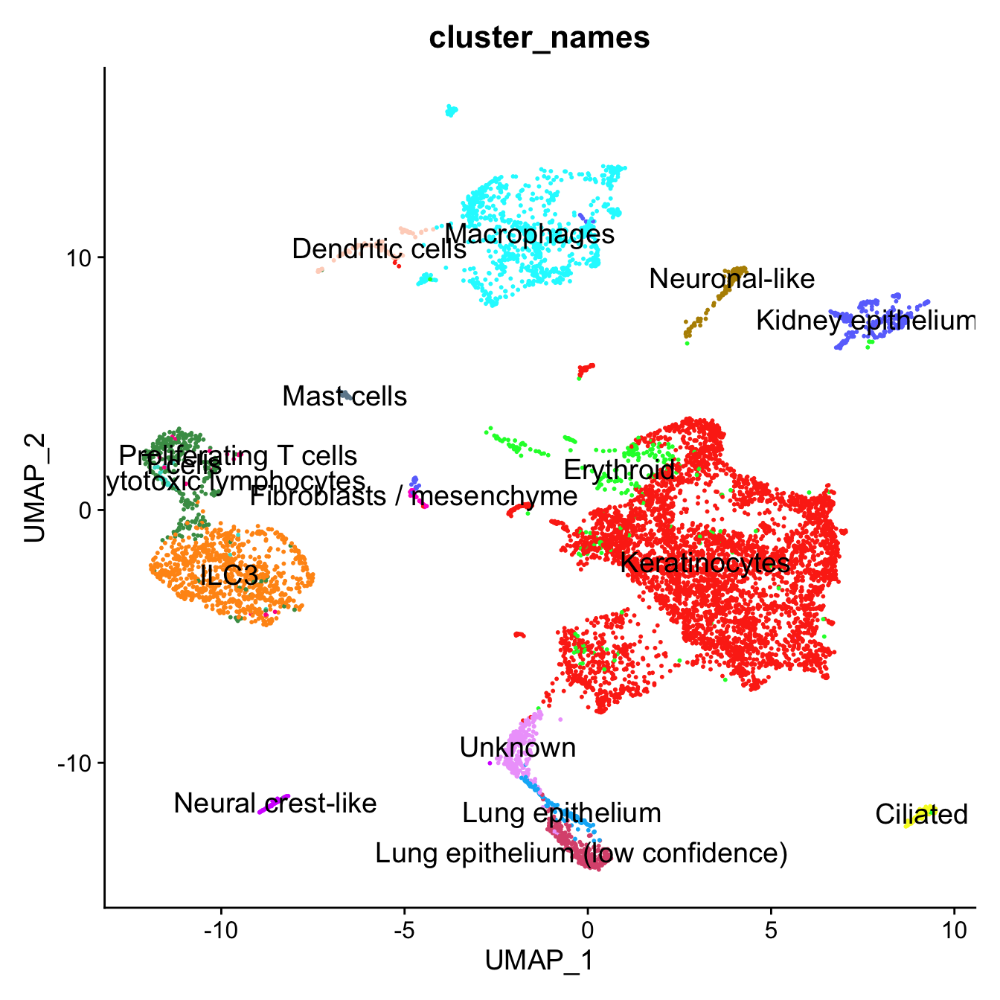
# Generate metadata for plotting
meta <- seu_int@meta.data %>% group_by(Donor.Paper, cluster_names) %>%
summarise(Donor.Paper = unique(Donor.Paper),
n_cells = n(),
gest_age_weeks = unique(gest_age_weeks),
early_late_gestation = unique(early_late_gestation),
foetal_sex = unique(foetal_sex),
cmv_status = unique(cmv_status),
Dataset = unique(Dataset),
cluster_names = unique(cluster_names),
sample_type = unique(sample_type))`summarise()` has regrouped the output.
ℹ Summaries were computed grouped by Donor.Paper and cluster_names.
ℹ Output is grouped by Donor.Paper.
ℹ Use `summarise(.groups = "drop_last")` to silence this message.
ℹ Use `summarise(.by = c(Donor.Paper, cluster_names))` for per-operation
grouping (`?dplyr::dplyr_by`) instead.meta <- as.data.frame(meta)
rownames(meta) <- paste(meta$Donor.Paper, meta$cluster_names, sep = "_")
meta$Donor_Label <- rownames(meta)sce <- SingleCellExperiment(list(counts = seu_int[["RNA"]]@counts),
colData = seu_int@meta.data)
pseudobulk <- aggregateAcrossCells(sce, id = colData(sce)[, c("Donor.Paper", "cluster_names")])
pseudobulkclass: SingleCellExperiment
dim: 36270 88
metadata(0):
assays(1): counts
rownames(36270): MIR1302-2HG FAM138A ... AC007325.4 AC007325.2
rowData names(0):
colnames: NULL
colData names(51): orig.ident nCount_RNA ... cluster_names ncells
reducedDimNames(0):
mainExpName: NULL
altExpNames(0):seu_int@meta.data %>%
ggplot(aes(x = cluster_names, fill = cluster_names)) +
geom_bar() +
theme_cowplot(12) +
facet_grid(. ~ Donor.Paper) +
scale_y_log10() +
scale_fill_manual(values = CLUSTER_NAME_COLOURS) +
rotate_x_labels + no_legend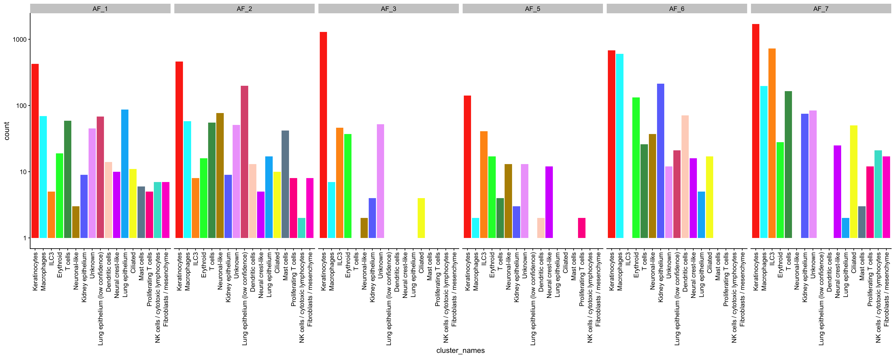
| Version | Author | Date |
|---|---|---|
| aa8cf36 | Calandra Grima | 2026-09-16 |
| 522775a | Calandra Grima | 2026-08-04 |
| b42cc88 | calandra.grima | 2026-02-16 |
| e778664 | Calandra Grima | 2025-11-14 |
| fabfd92 | Calandra Grima | 2025-04-04 |
| 79240df | Calandra Grima | 2025-04-02 |
| 6b756ec | Calandra Grima | 2025-03-28 |
| a829e36 | Calandra Grima | 2025-03-27 |
| 9e344bb | Calandra Grima | 2025-02-05 |
| e91b631 | Calandra Grima | 2025-01-15 |
| 0c50ac4 | Calandra Grima | 2024-08-09 |
| 83c91d4 | Calandra Grima | 2024-08-09 |
seu_int@meta.data %>%
ggplot(aes(x = Donor.Paper, fill = Donor.Paper)) +
geom_bar() +
theme_cowplot(12) +
facet_wrap(. ~ cluster_names) +
scale_y_log10() +
geom_hline(yintercept = 50) +
scale_fill_manual(values = ALL_DONORS_COLOURS.PAPER[levels(seu_int$Donor.Paper)]) +
rotate_x_labels + no_legend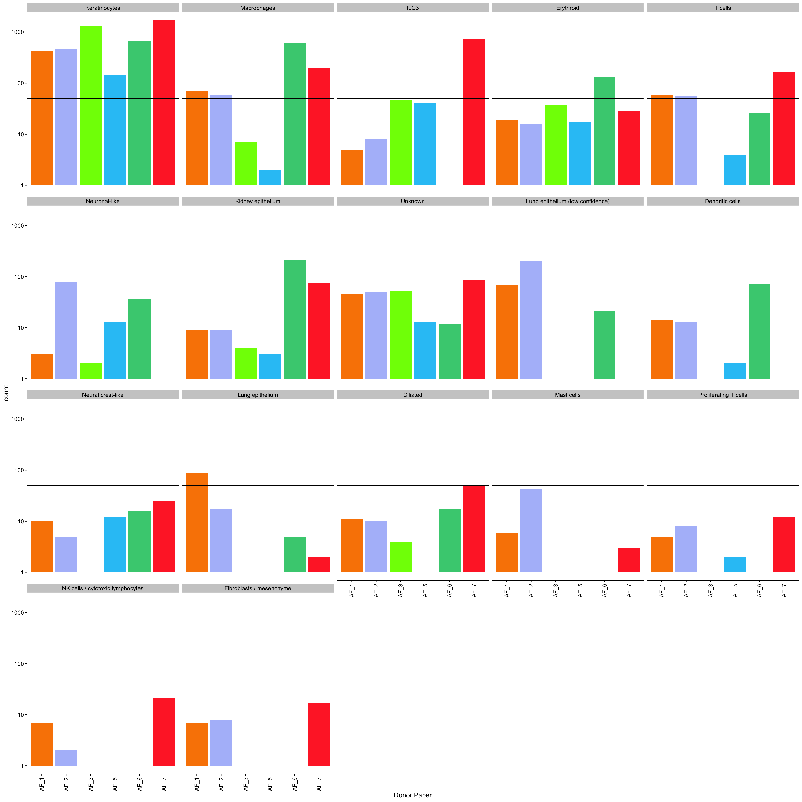
| Version | Author | Date |
|---|---|---|
| aa8cf36 | Calandra Grima | 2026-09-16 |
| 522775a | Calandra Grima | 2026-08-04 |
| b42cc88 | calandra.grima | 2026-02-16 |
| e778664 | Calandra Grima | 2025-11-14 |
| 6f39b64 | Calandra Grima | 2025-04-14 |
| fabfd92 | Calandra Grima | 2025-04-04 |
| 79240df | Calandra Grima | 2025-04-02 |
| 6b756ec | Calandra Grima | 2025-03-28 |
| a829e36 | Calandra Grima | 2025-03-27 |
| 9e344bb | Calandra Grima | 2025-02-05 |
| e91b631 | Calandra Grima | 2025-01-15 |
| 0c50ac4 | Calandra Grima | 2024-08-09 |
| 83c91d4 | Calandra Grima | 2024-08-09 |
min_cells <- 50
seu_int@meta.data %>%
ggplot(aes(x = cluster_names, fill = early_late_gestation)) +
geom_bar() +
theme_cowplot(12) +
facet_grid(. ~ Donor.Paper) +
scale_y_log10() +
scale_fill_manual(values = ALL_GEST_COLOURS) +
geom_hline(yintercept = min_cells) +
rotate_x_labels + no_legend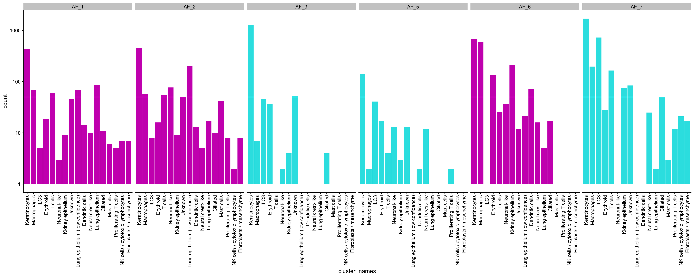
# convert to DGEList object
yPB <- DGEList(counts = counts(pseudobulk),
samples = colData(pseudobulk) %>% data.frame)
colnames(yPB) <- paste0(yPB$samples$Donor.Paper, "_", as.character(yPB$samples$cluster_names))
dim(yPB)[1] 36270 88# remove genes with zero counts in all samples
keep <- rowSums(yPB$counts) > 0
yFlt <- yPB[keep, ]
dim(yFlt)[1] 32413 88chosen_cells <- "Keratinocytes"
max_k <- 2 * length(chosen_cells)
# may cause issues if there is a cell type not all in samples --> might need to set a warning for this later if it causes issues
ySub <- yFlt[, yFlt$samples$cluster_names %in% chosen_cells]
# filter samples with less than min_cells
ySub <- ySub[, ySub$samples$ncells > min_cells]
dim(ySub)[1] 32413 6# Perform MDS
MDS <- calcMDS(ySub, 5, "Donor_Label")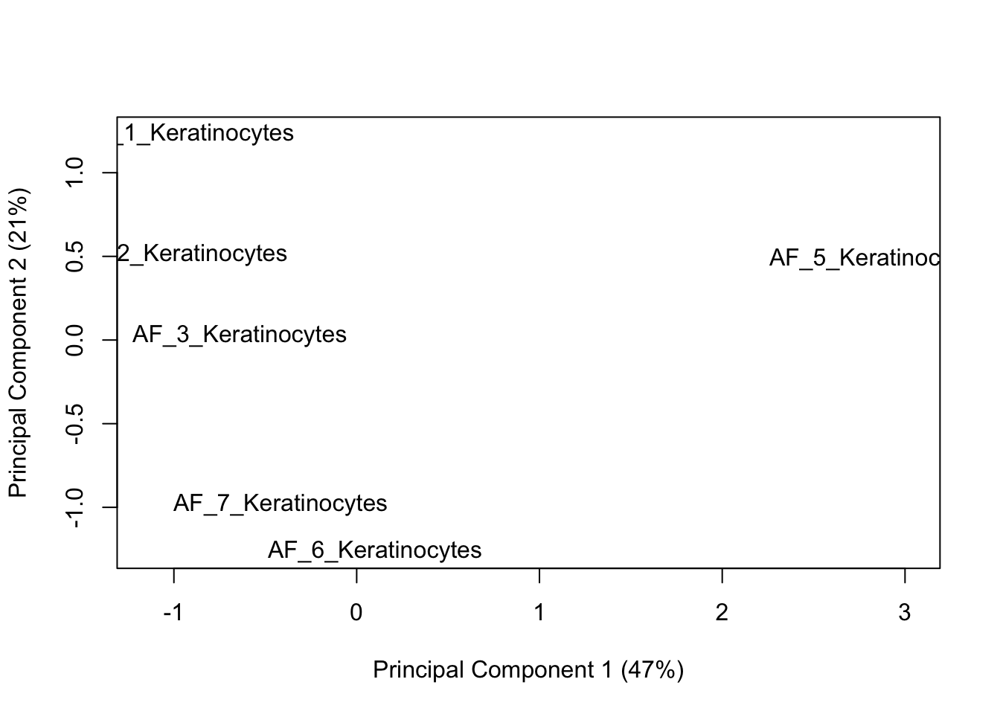
| Version | Author | Date |
|---|---|---|
| aa8cf36 | Calandra Grima | 2026-09-16 |
| 522775a | Calandra Grima | 2026-08-04 |
| b42cc88 | calandra.grima | 2026-02-16 |
| e778664 | Calandra Grima | 2025-11-14 |
| fabfd92 | Calandra Grima | 2025-04-04 |
| 6b756ec | Calandra Grima | 2025-03-28 |
| a829e36 | Calandra Grima | 2025-03-27 |
| 9e344bb | Calandra Grima | 2025-02-05 |
| e91b631 | Calandra Grima | 2025-01-15 |
| 83c91d4 | Calandra Grima | 2024-08-09 |
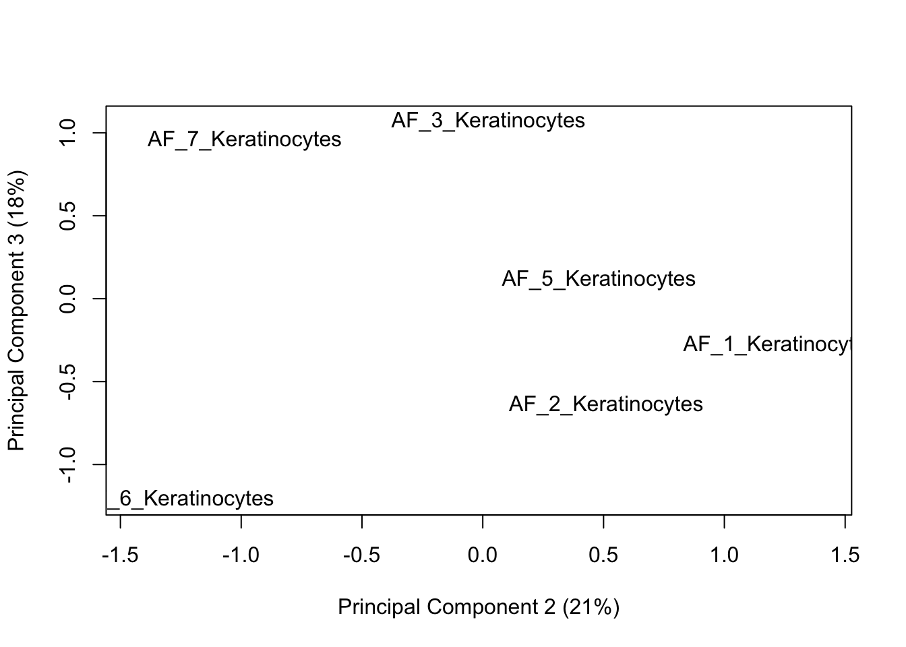
| Version | Author | Date |
|---|---|---|
| aa8cf36 | Calandra Grima | 2026-09-16 |
| 522775a | Calandra Grima | 2026-08-04 |
| b42cc88 | calandra.grima | 2026-02-16 |
| e778664 | Calandra Grima | 2025-11-14 |
| fabfd92 | Calandra Grima | 2025-04-04 |
| 6b756ec | Calandra Grima | 2025-03-28 |
| a829e36 | Calandra Grima | 2025-03-27 |
| 9e344bb | Calandra Grima | 2025-02-05 |
| e91b631 | Calandra Grima | 2025-01-15 |
| 83c91d4 | Calandra Grima | 2024-08-09 |
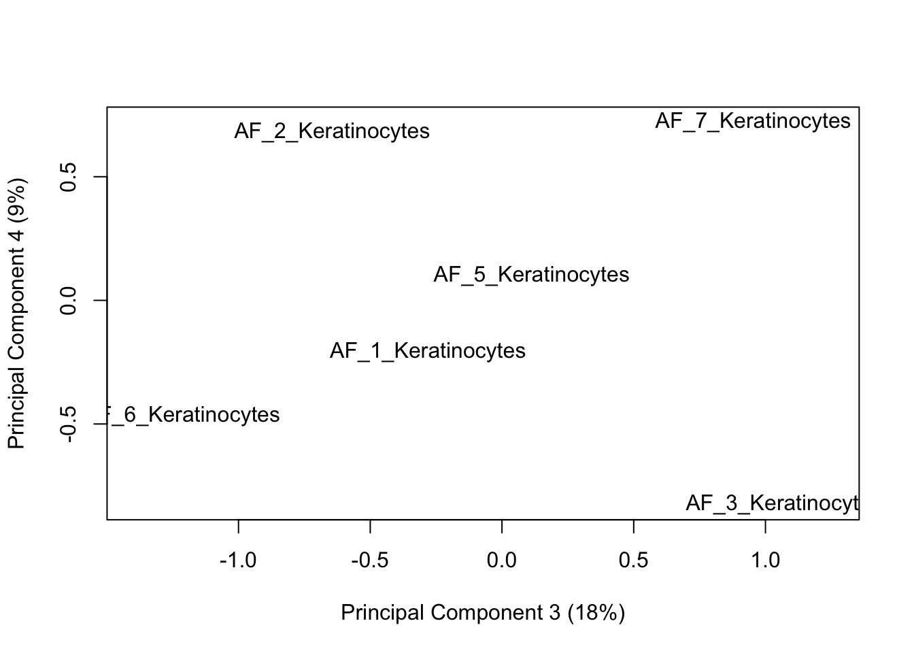
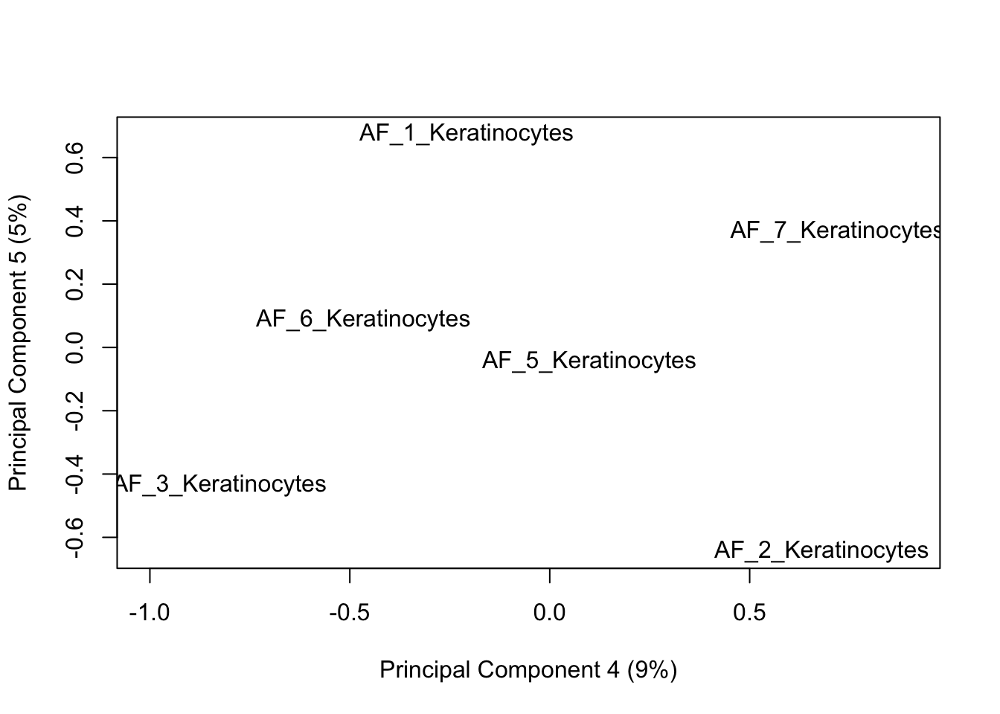
meta <- meta[intersect(meta$Donor_Label, rownames(MDS)),]
MDS <- MDS[rownames(meta),]
MDS <- cbind(MDS, meta[, !(colnames(meta) %in% colnames(MDS))])
MDS$cluster_names <- factor(MDS$cluster_names)
MDS Donor_Label Dim_1 Dim_2 Dim_3
AF_1_Keratinocytes AF_1_Keratinocytes -0.9271865 1.23256158 -0.2803320
AF_2_Keratinocytes AF_2_Keratinocytes -0.9638068 0.51136083 -0.6440856
AF_3_Keratinocytes AF_3_Keratinocytes -0.6386241 0.02435172 1.0699302
AF_5_Keratinocytes AF_5_Keratinocytes 2.8446586 0.48132293 0.1131406
AF_6_Keratinocytes AF_6_Keratinocytes 0.1008393 -1.26479350 -1.2130870
AF_7_Keratinocytes AF_7_Keratinocytes -0.4158804 -0.98480355 0.9544338
Dim_4 Dim_5 Donor.Paper cluster_names n_cells
AF_1_Keratinocytes -0.20762457 0.67498758 AF_1 Keratinocytes 427
AF_2_Keratinocytes 0.68026491 -0.64516906 AF_2 Keratinocytes 460
AF_3_Keratinocytes -0.82571483 -0.43598061 AF_3 Keratinocytes 1290
AF_5_Keratinocytes 0.09918452 -0.04596661 AF_5 Keratinocytes 141
AF_6_Keratinocytes -0.46590523 0.08589578 AF_6 Keratinocytes 681
AF_7_Keratinocytes 0.71979520 0.36623292 AF_7 Keratinocytes 1699
gest_age_weeks early_late_gestation foetal_sex cmv_status
AF_1_Keratinocytes 23 Late Female positive
AF_2_Keratinocytes 25 Late Male negative
AF_3_Keratinocytes 15 Early Female negative
AF_5_Keratinocytes 16 Early Female negative
AF_6_Keratinocytes 24 Late Male negative
AF_7_Keratinocytes 16 Early Male negative
Dataset sample_type
AF_1_Keratinocytes dataset_01 fresh
AF_2_Keratinocytes dataset_01 fresh
AF_3_Keratinocytes dataset_03 frozen
AF_5_Keratinocytes dataset_04 frozen
AF_6_Keratinocytes dataset_05 frozen
AF_7_Keratinocytes dataset_05 frozenplotMDS.Dims1_5(MDS, "Donor.Paper", ALL_DONORS_COLOURS.PAPER, makeFactor = T)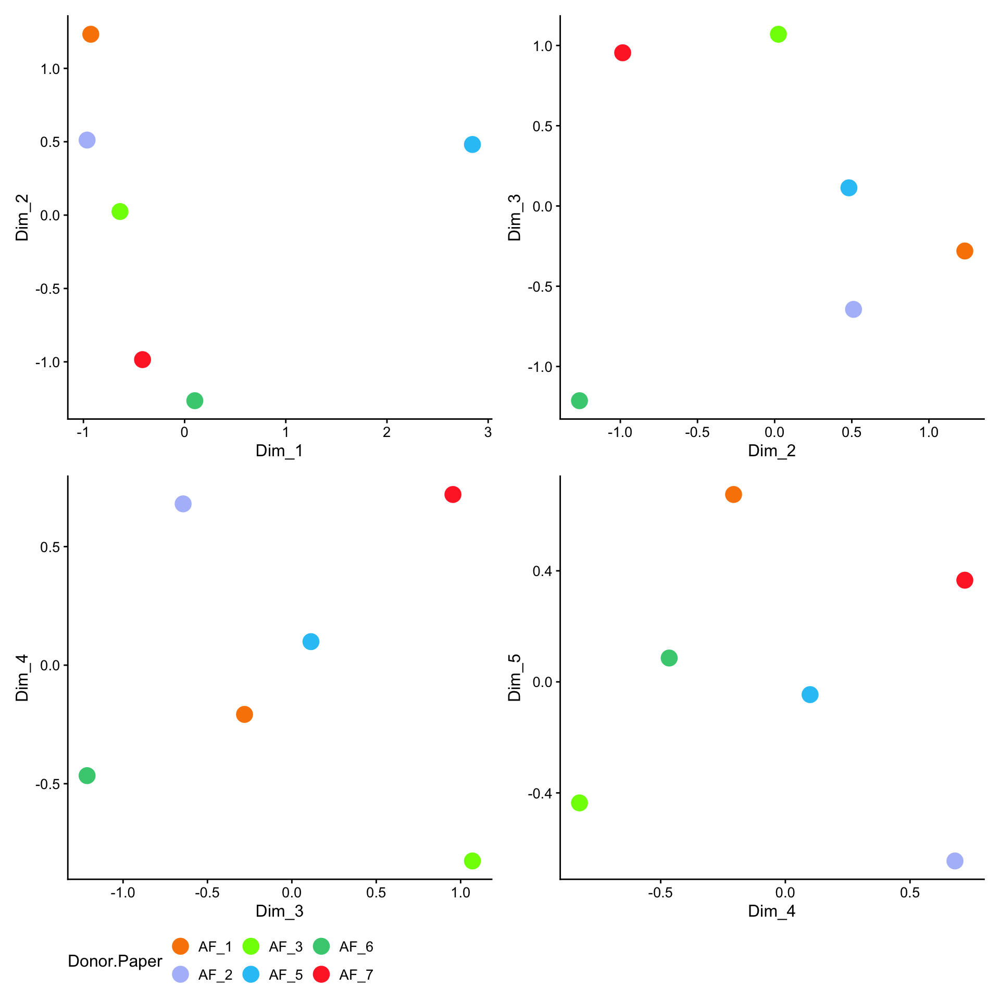
| Version | Author | Date |
|---|---|---|
| aa8cf36 | Calandra Grima | 2026-09-16 |
| 522775a | Calandra Grima | 2026-08-04 |
| b42cc88 | calandra.grima | 2026-02-16 |
| e778664 | Calandra Grima | 2025-11-14 |
| 6f39b64 | Calandra Grima | 2025-04-14 |
| fabfd92 | Calandra Grima | 2025-04-04 |
| 6b756ec | Calandra Grima | 2025-03-28 |
| a829e36 | Calandra Grima | 2025-03-27 |
| 9e344bb | Calandra Grima | 2025-02-05 |
| e91b631 | Calandra Grima | 2025-01-15 |
| 83c91d4 | Calandra Grima | 2024-08-09 |
plotMDS.Dims1_5(MDS, "Dataset", ALL_DATASETS_COLOURS, makeFactor = T)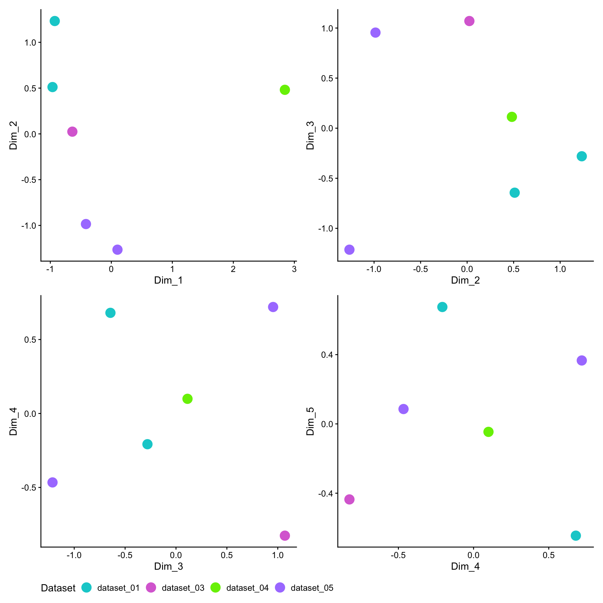
| Version | Author | Date |
|---|---|---|
| 522775a | Calandra Grima | 2026-08-04 |
| b42cc88 | calandra.grima | 2026-02-16 |
| e778664 | Calandra Grima | 2025-11-14 |
| 6f39b64 | Calandra Grima | 2025-04-14 |
| fabfd92 | Calandra Grima | 2025-04-04 |
| 6b756ec | Calandra Grima | 2025-03-28 |
| a829e36 | Calandra Grima | 2025-03-27 |
| 9e344bb | Calandra Grima | 2025-02-05 |
| e91b631 | Calandra Grima | 2025-01-15 |
| 83c91d4 | Calandra Grima | 2024-08-09 |
plotMDS.Dims1_5(MDS, "foetal_sex", ALL_FOETAL_SEX_COLOURS, makeFactor = T)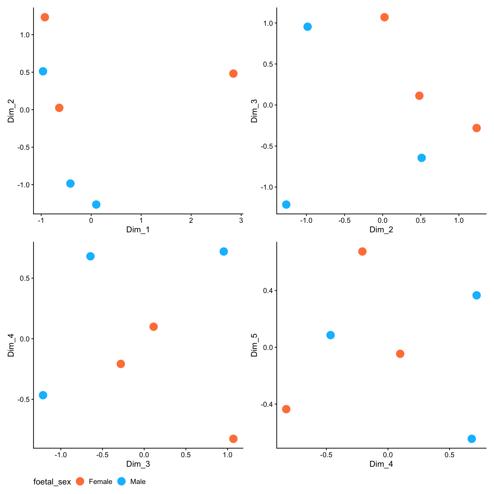
| Version | Author | Date |
|---|---|---|
| 522775a | Calandra Grima | 2026-08-04 |
| b42cc88 | calandra.grima | 2026-02-16 |
| e778664 | Calandra Grima | 2025-11-14 |
| 6f39b64 | Calandra Grima | 2025-04-14 |
| fabfd92 | Calandra Grima | 2025-04-04 |
| 6b756ec | Calandra Grima | 2025-03-28 |
| a829e36 | Calandra Grima | 2025-03-27 |
| 9e344bb | Calandra Grima | 2025-02-05 |
| e91b631 | Calandra Grima | 2025-01-15 |
| 83c91d4 | Calandra Grima | 2024-08-09 |
plotMDS.Dims1_5(MDS, "gest_age_weeks", makeFactor = TRUE)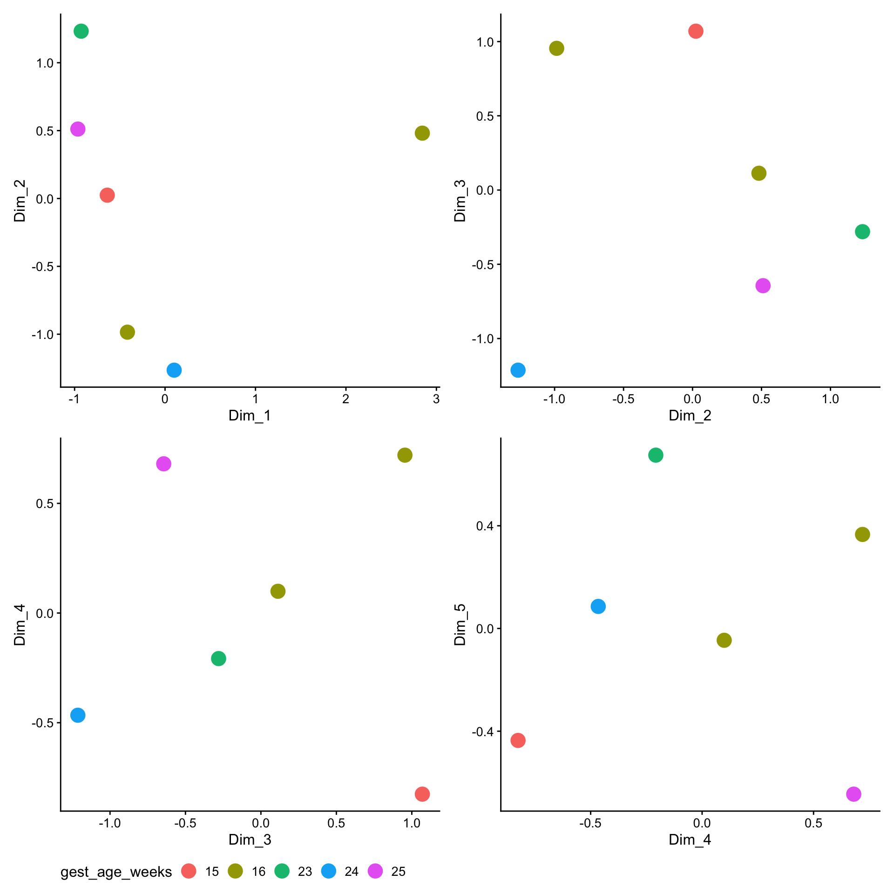
| Version | Author | Date |
|---|---|---|
| 522775a | Calandra Grima | 2026-08-04 |
| b42cc88 | calandra.grima | 2026-02-16 |
| e778664 | Calandra Grima | 2025-11-14 |
| 6f39b64 | Calandra Grima | 2025-04-14 |
| fabfd92 | Calandra Grima | 2025-04-04 |
| 6b756ec | Calandra Grima | 2025-03-28 |
| a829e36 | Calandra Grima | 2025-03-27 |
| 9e344bb | Calandra Grima | 2025-02-05 |
| e91b631 | Calandra Grima | 2025-01-15 |
| 83c91d4 | Calandra Grima | 2024-08-09 |
plotMDS.Dims1_5(MDS, "early_late_gestation", ALL_GEST_COLOURS, makeFactor = T)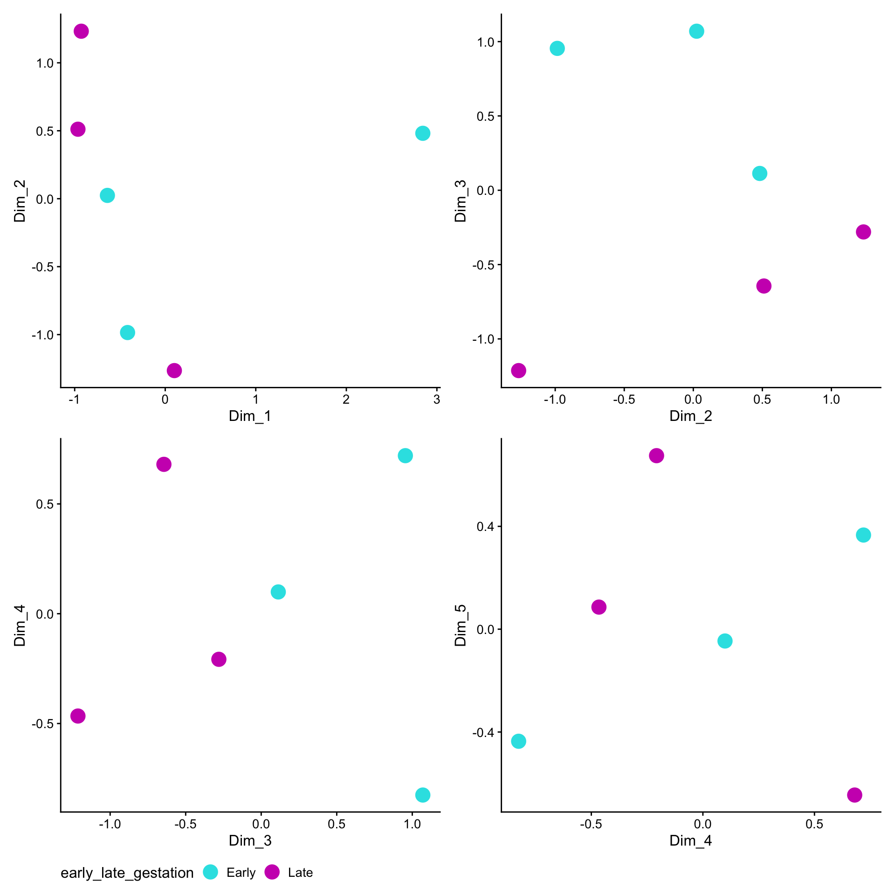
| Version | Author | Date |
|---|---|---|
| 522775a | Calandra Grima | 2026-08-04 |
| fabfd92 | Calandra Grima | 2025-04-04 |
| 79240df | Calandra Grima | 2025-04-02 |
| 6b756ec | Calandra Grima | 2025-03-28 |
| a829e36 | Calandra Grima | 2025-03-27 |
| 9e344bb | Calandra Grima | 2025-02-05 |
| e91b631 | Calandra Grima | 2025-01-15 |
| ba0c66d | Calandra Grima | 2024-08-09 |
| 83c91d4 | Calandra Grima | 2024-08-09 |
plotMDS.Dims1_5(MDS, "cmv_status", makeFactor = TRUE)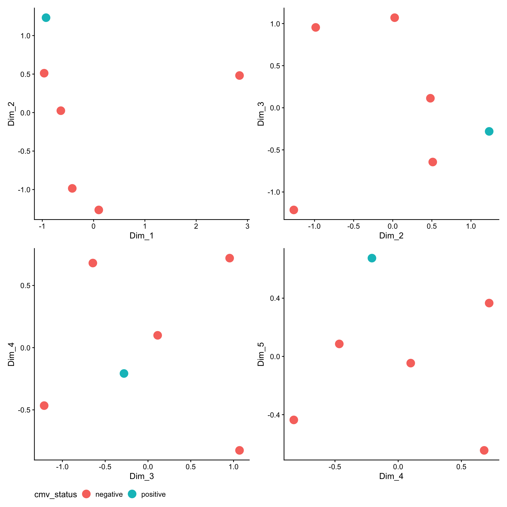
plotMDS.Dims1_5(MDS, "n_cells")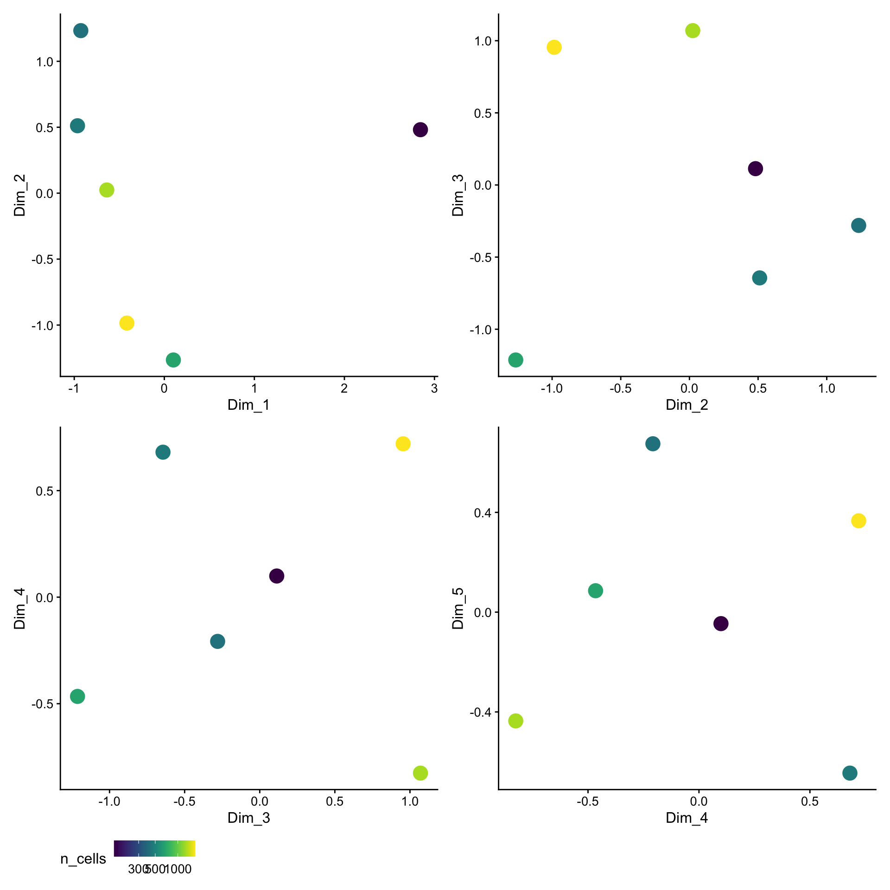
plotMDS.Dims1_5(MDS, "cluster_names", CLUSTER_NAME_COLOURS)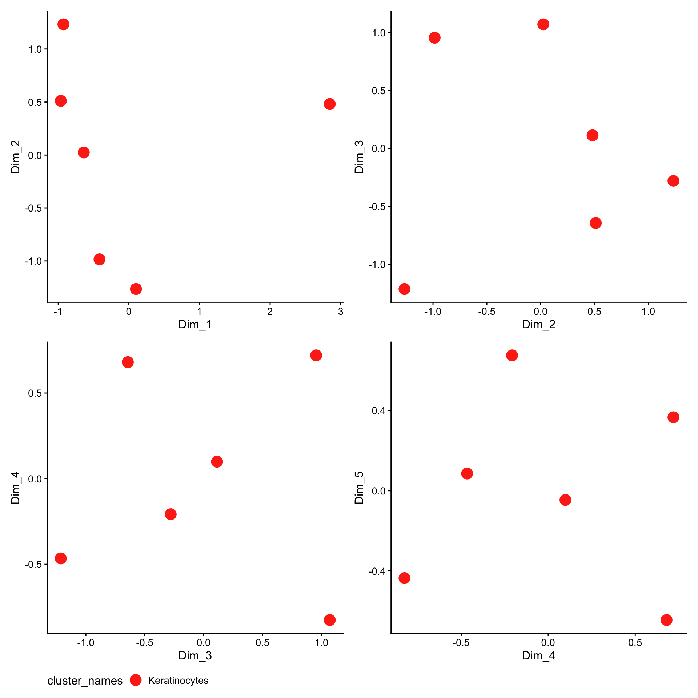
plotMDS.Dims1_5(MDS, "sample_type", makeFactor = TRUE)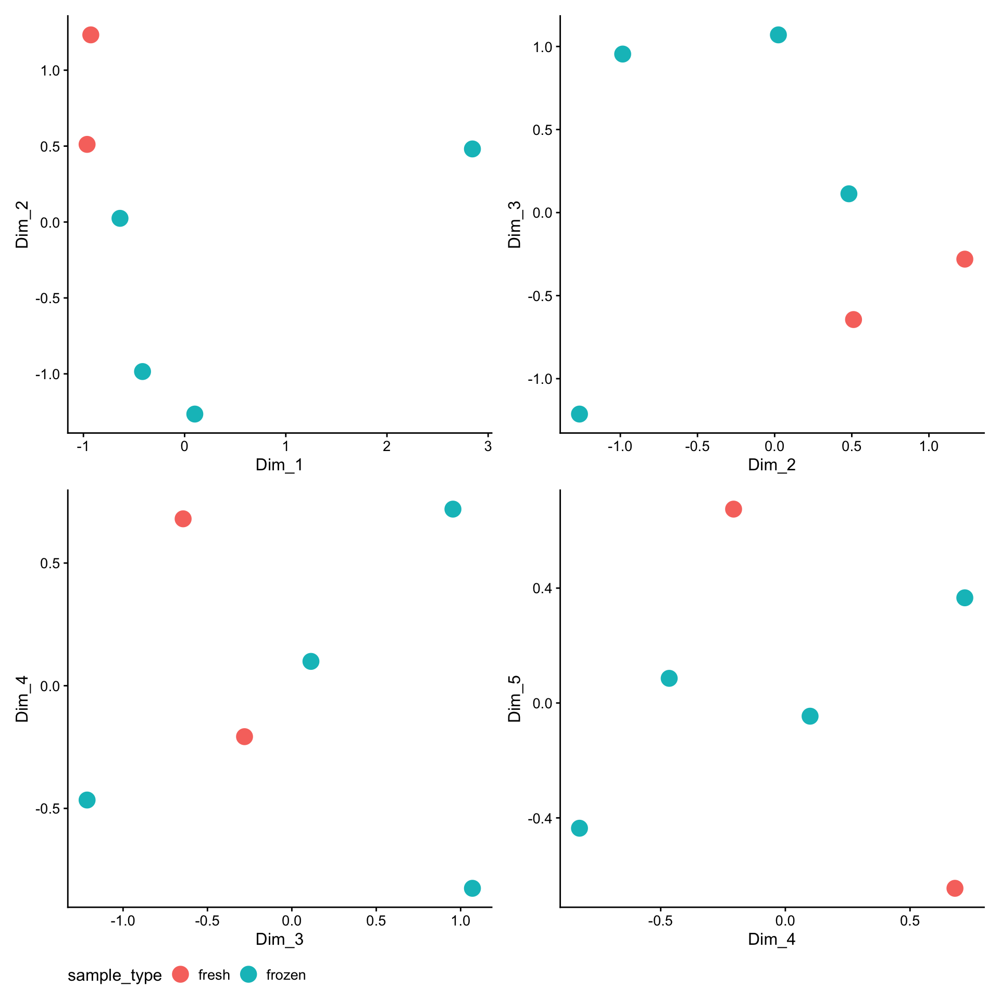
| Version | Author | Date |
|---|---|---|
| e069b3a | Calandra Grima | 2026-09-04 |
# filter genes with no ENTREZ IDs and very low expression
gns <- AnnotationDbi::mapIds(org.Hs.eg.db::org.Hs.eg.db,
keys = rownames(ySub),
column = c("ENTREZID"),
keytype = "SYMBOL",
multiVals = "first")'select()' returned 1:many mapping between keys and columnskeep <- !is.na(gns)
ySub <- ySub[keep,]
thresh <- 0
m <- rowMedians(edgeR::cpm(ySub$counts, log = TRUE))
plot(density(m))
abline(v = thresh, lty = 2)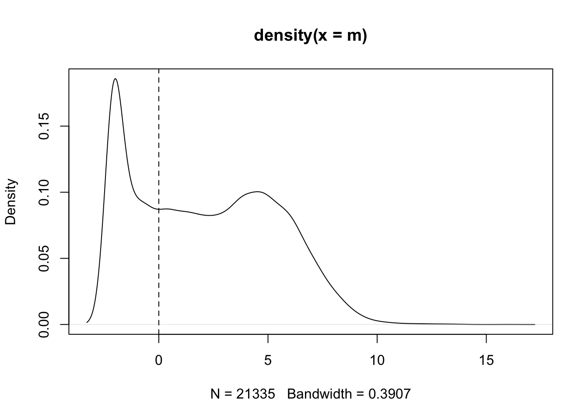
| Version | Author | Date |
|---|---|---|
| 522775a | Calandra Grima | 2026-08-04 |
| b42cc88 | calandra.grima | 2026-02-16 |
| e778664 | Calandra Grima | 2025-11-14 |
| 6f39b64 | Calandra Grima | 2025-04-14 |
| fabfd92 | Calandra Grima | 2025-04-04 |
| 6b756ec | Calandra Grima | 2025-03-28 |
| a829e36 | Calandra Grima | 2025-03-27 |
| 9e344bb | Calandra Grima | 2025-02-05 |
| e91b631 | Calandra Grima | 2025-01-15 |
| 83c91d4 | Calandra Grima | 2024-08-09 |
keep <- m > thresh
table(keep)keep
FALSE TRUE
7002 14333 ySub <- ySub[keep, ]
dim(ySub)[1] 14333 6Use PCA to investigate if sources of variation in the data correlate with specified covariates.
PCs <- prcomp(t(edgeR::cpm(ySub$counts, log = TRUE)),
center = TRUE, retx = TRUE)
loadings = PCs$x # pc loadings
nGenes = nrow(ySub)
nSamples = ncol(ySub)
meta$Donor.Paper <- factor(meta$Donor.Paper)
meta$early_late_gestation <- factor(meta$early_late_gestation)
meta$foetal_sex <- factor(meta$foetal_sex)
meta$cmv_status <- factor(meta$cmv_status)
meta$Dataset <- factor(meta$Dataset)
meta$Donor_Label <- factor(meta$Donor_Label)
meta$sample_type <- factor(meta$sample_type)
meta.numeric <- meta %>% mutate(across(everything(), as.numeric))
moduleTraitCor <- suppressWarnings(cor(loadings[, 1:min(10, nSamples)],
meta.numeric, use = "p"))
moduleTraitPvalue <- WGCNA::corPvalueStudent(moduleTraitCor, (nSamples-2))
textMatrix <- paste(signif(moduleTraitCor, 2), "\n(",
signif(moduleTraitPvalue, 1), ")", sep = "")
dim(textMatrix) <- dim(moduleTraitCor)par(mfrow = c(1, 1))
plot(PCs, type="lines", main = chosen_cells) # scree plot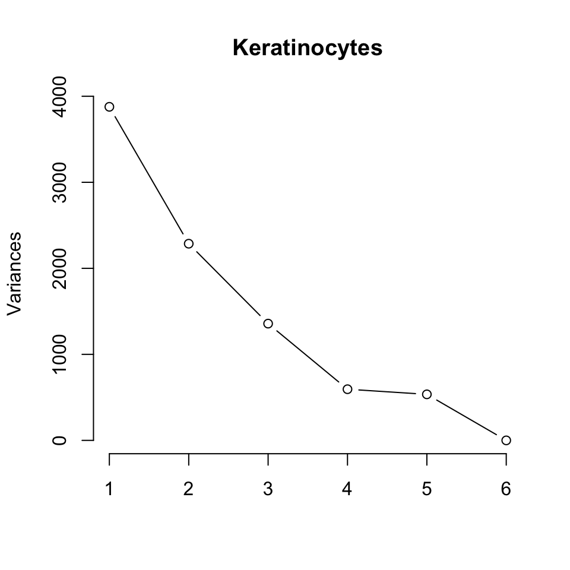
| Version | Author | Date |
|---|---|---|
| aa8cf36 | Calandra Grima | 2026-09-16 |
| 522775a | Calandra Grima | 2026-08-04 |
| b42cc88 | calandra.grima | 2026-02-16 |
| e778664 | Calandra Grima | 2025-11-14 |
| fabfd92 | Calandra Grima | 2025-04-04 |
| 6b756ec | Calandra Grima | 2025-03-28 |
| a829e36 | Calandra Grima | 2025-03-27 |
| 9e344bb | Calandra Grima | 2025-02-05 |
| e91b631 | Calandra Grima | 2025-01-15 |
| 83c91d4 | Calandra Grima | 2024-08-09 |
# Display the correlation values within a heatmap plot
par(cex=0.75, mar = c(3, 5, 2, 1))
WGCNA::labeledHeatmap(Matrix = t(moduleTraitCor),
xLabels = colnames(loadings)[1:min(10, nSamples)],
yLabels = names(meta.numeric),
colorLabels = FALSE,
colors = WGCNA::blueWhiteRed(6),
textMatrix = t(textMatrix),
setStdMargins = TRUE,
cex.text = 1,
cex.lab = 1,
zlim = c(-1,1),
main = paste0("PCA-trait relationships: Top ",
min(10, nSamples),
" PCs"))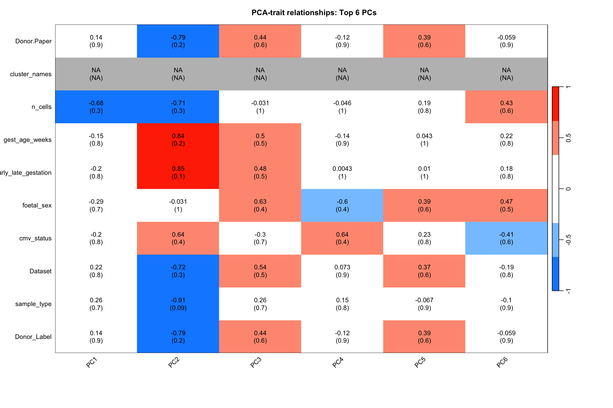
| Version | Author | Date |
|---|---|---|
| aa8cf36 | Calandra Grima | 2026-09-16 |
| e069b3a | Calandra Grima | 2026-09-04 |
| 522775a | Calandra Grima | 2026-08-04 |
| b42cc88 | calandra.grima | 2026-02-16 |
| e778664 | Calandra Grima | 2025-11-14 |
| 6f39b64 | Calandra Grima | 2025-04-14 |
| fabfd92 | Calandra Grima | 2025-04-04 |
| 79240df | Calandra Grima | 2025-04-02 |
| 6b756ec | Calandra Grima | 2025-03-28 |
| a829e36 | Calandra Grima | 2025-03-27 |
| 9e344bb | Calandra Grima | 2025-02-05 |
| e91b631 | Calandra Grima | 2025-01-15 |
| 83c91d4 | Calandra Grima | 2024-08-09 |
Use house-keeping genes identified from human scRNA-seq experiments.
data("segList", package = "scMerge")
housekeepingGenes <- segList$human$bulkRNAseqHK
ctl <- rownames(ySub) %in% housekeepingGenes
table(ctl)ctl
FALSE TRUE
10915 3418 # Plot house keeping genes across samples
edgeR::cpm(ySub$counts, log = TRUE) %>%
data.frame %>%
rownames_to_column(var = "gene") %>%
pivot_longer(-gene, names_to = "sample") %>%
mutate(sample = gsub("^X", "", sample)) %>%
left_join(rownames_to_column(ySub$samples,
var = "sample")) %>%
dplyr::filter(gene %in% housekeepingGenes) %>%
dplyr::filter(cluster_names %in% chosen_cells) %>%
mutate(Dataset = as.factor(Dataset)) -> datJoining with `by = join_by(sample)`dat %>%
heatmap(gene, sample, value,
scale = "row",
show_row_names = FALSE,
show_column_names = FALSE) %>%
annotation_tile(Dataset) %>%
annotation_tile(Donor.Paper) %>%
annotation_tile(gest_age_weeks) %>%
annotation_tile(foetal_sex) %>%
annotation_tile(cluster_names) %>%
annotation_tile(sample_type)tidyHeatmap says: If you use tidyHeatmap for scientific research, please cite: Mangiola, S. and Papenfuss, A.T., 2020. 'tidyHeatmap: an R package for modular heatmap production based on tidy principles.' Journal of Open Source Software. doi:10.21105/joss.02472.
This message is displayed once per session.Warning: `when()` was deprecated in purrr 1.0.0.
ℹ Please use `if` instead.
ℹ The deprecated feature was likely used in the tidyHeatmap package.
Please report the issue at
<https://github.com/stemangiola/tidyHeatmap/issues>.
This warning is displayed once per session.
Call `lifecycle::last_lifecycle_warnings()` to see where this warning was
generated.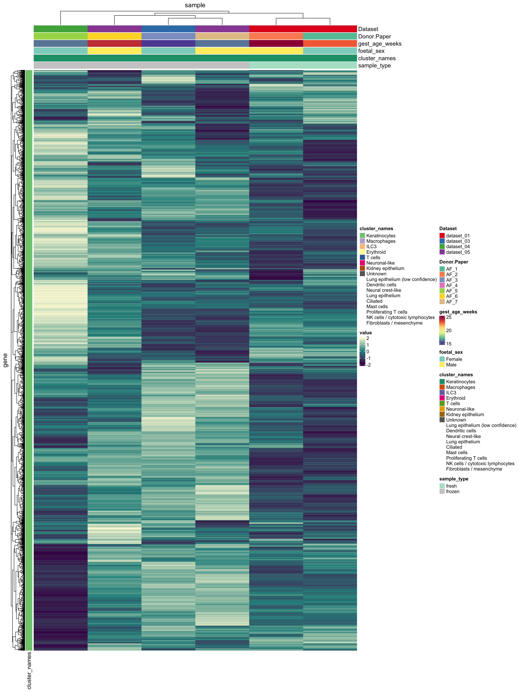
| Version | Author | Date |
|---|---|---|
| aa8cf36 | Calandra Grima | 2026-09-16 |
| e069b3a | Calandra Grima | 2026-09-04 |
| 522775a | Calandra Grima | 2026-08-04 |
| b42cc88 | calandra.grima | 2026-02-16 |
| e778664 | Calandra Grima | 2025-11-14 |
| fabfd92 | Calandra Grima | 2025-04-04 |
| 6b756ec | Calandra Grima | 2025-03-28 |
| a829e36 | Calandra Grima | 2025-03-27 |
| 9e344bb | Calandra Grima | 2025-02-05 |
| e91b631 | Calandra Grima | 2025-01-15 |
| 83c91d4 | Calandra Grima | 2024-08-09 |
# Perform MDS
MDS.housekeeping <- calcMDS(ySub[rownames(ySub) %in% housekeepingGenes,], 5, "Donor_Label")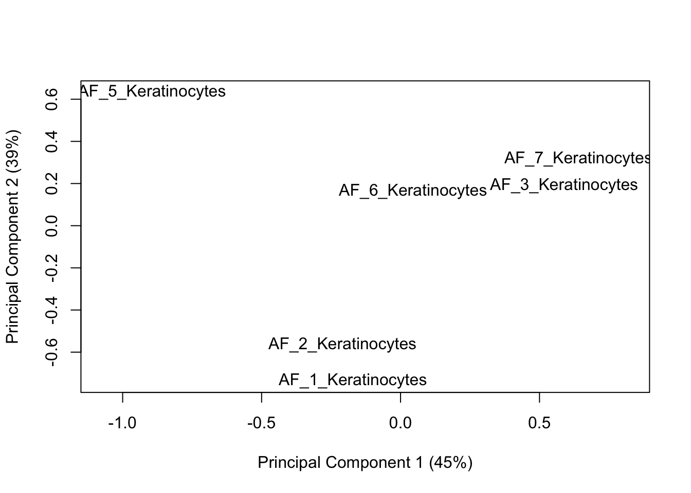
| Version | Author | Date |
|---|---|---|
| aa8cf36 | Calandra Grima | 2026-09-16 |
| 522775a | Calandra Grima | 2026-08-04 |
| b42cc88 | calandra.grima | 2026-02-16 |
| e778664 | Calandra Grima | 2025-11-14 |
| 6f39b64 | Calandra Grima | 2025-04-14 |
| fabfd92 | Calandra Grima | 2025-04-04 |
| 6b756ec | Calandra Grima | 2025-03-28 |
| a829e36 | Calandra Grima | 2025-03-27 |
| 9e344bb | Calandra Grima | 2025-02-05 |
| e91b631 | Calandra Grima | 2025-01-15 |
| 83c91d4 | Calandra Grima | 2024-08-09 |
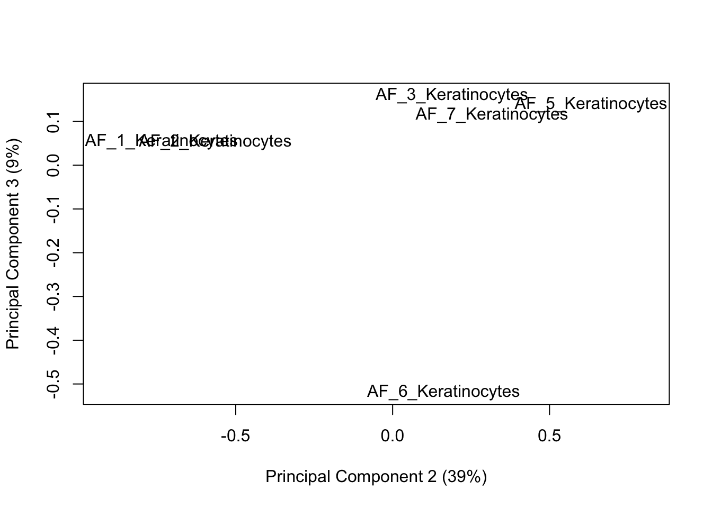
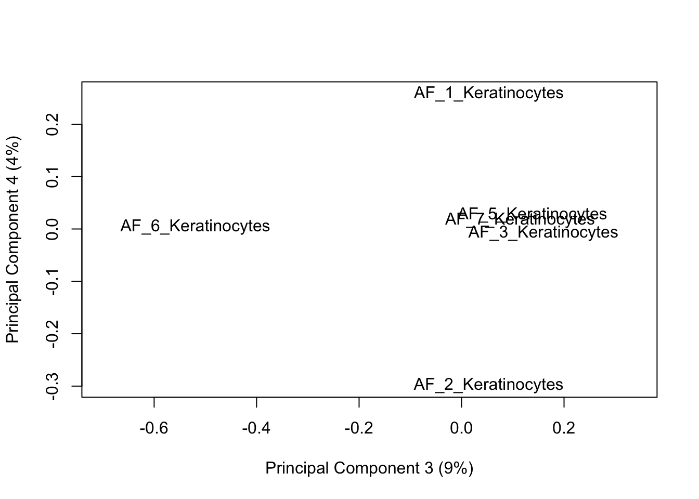
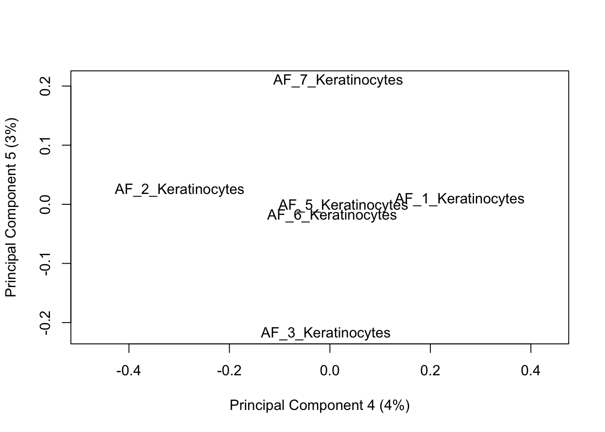
meta <- meta[intersect(meta$Donor_Label, rownames(MDS.housekeeping)),]
MDS.housekeeping <- MDS.housekeeping[rownames(meta),]
MDS.housekeeping <- cbind(MDS.housekeeping, meta[, !(colnames(meta) %in% colnames(MDS.housekeeping))])
MDS.housekeeping$cluster_names <- factor(MDS.housekeeping$cluster_names)
MDS.housekeeping Donor_Label Dim_1 Dim_2 Dim_3
AF_1_Keratinocytes AF_1_Keratinocytes -0.17130342 -0.7363136 0.05372736
AF_2_Keratinocytes AF_2_Keratinocytes -0.20851840 -0.5648857 0.05310846
AF_3_Keratinocytes AF_3_Keratinocytes 0.58881723 0.1893702 0.15996629
AF_5_Keratinocytes AF_5_Keratinocytes -0.89430381 0.6324502 0.13829832
AF_6_Keratinocytes AF_6_Keratinocytes 0.04510712 0.1625338 -0.51943608
AF_7_Keratinocytes AF_7_Keratinocytes 0.64020129 0.3168451 0.11433566
Dim_4 Dim_5 Donor.Paper cluster_names n_cells
AF_1_Keratinocytes 0.258614931 0.008259748 AF_1 Keratinocytes 427
AF_2_Keratinocytes -0.298869977 0.024049515 AF_2 Keratinocytes 460
AF_3_Keratinocytes -0.007989717 -0.218959687 AF_3 Keratinocytes 1290
AF_5_Keratinocytes 0.027024885 -0.002972934 AF_5 Keratinocytes 141
AF_6_Keratinocytes 0.004588045 -0.018990439 AF_6 Keratinocytes 681
AF_7_Keratinocytes 0.016631834 0.208613798 AF_7 Keratinocytes 1699
gest_age_weeks early_late_gestation foetal_sex cmv_status
AF_1_Keratinocytes 23 Late Female positive
AF_2_Keratinocytes 25 Late Male negative
AF_3_Keratinocytes 15 Early Female negative
AF_5_Keratinocytes 16 Early Female negative
AF_6_Keratinocytes 24 Late Male negative
AF_7_Keratinocytes 16 Early Male negative
Dataset sample_type
AF_1_Keratinocytes dataset_01 fresh
AF_2_Keratinocytes dataset_01 fresh
AF_3_Keratinocytes dataset_03 frozen
AF_5_Keratinocytes dataset_04 frozen
AF_6_Keratinocytes dataset_05 frozen
AF_7_Keratinocytes dataset_05 frozensaveRDS(MDS.housekeeping,
here("data", "workflow", "AmnioSC.MDS_housekeeping.Keratinocyte_DGE.rds"))plotMDS.Dims1_5(MDS.housekeeping, "Donor.Paper", ALL_DONORS_COLOURS.PAPER, makeFactor = T)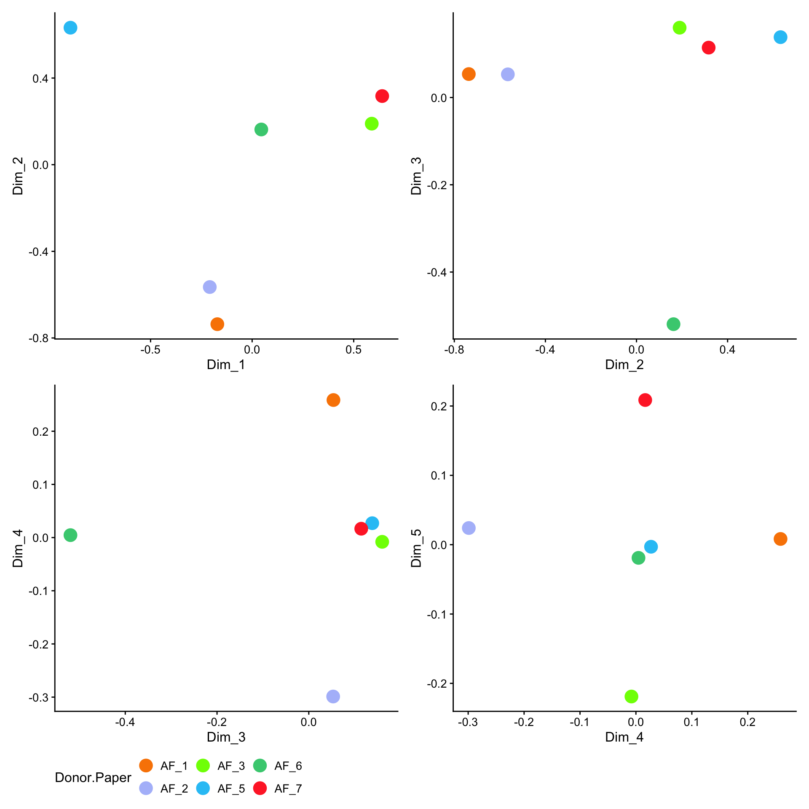
| Version | Author | Date |
|---|---|---|
| abd2114 | Calandra Grima | 2026-10-02 |
| aa8cf36 | Calandra Grima | 2026-09-16 |
| 522775a | Calandra Grima | 2026-08-04 |
| b42cc88 | calandra.grima | 2026-02-16 |
| e778664 | Calandra Grima | 2025-11-14 |
| 6f39b64 | Calandra Grima | 2025-04-14 |
| fabfd92 | Calandra Grima | 2025-04-04 |
| 6b756ec | Calandra Grima | 2025-03-28 |
| a829e36 | Calandra Grima | 2025-03-27 |
| 9e344bb | Calandra Grima | 2025-02-05 |
| e91b631 | Calandra Grima | 2025-01-15 |
| 83c91d4 | Calandra Grima | 2024-08-09 |
plotMDS.Dims1_5(MDS.housekeeping, "Dataset", ALL_DATASETS_COLOURS, makeFactor = T)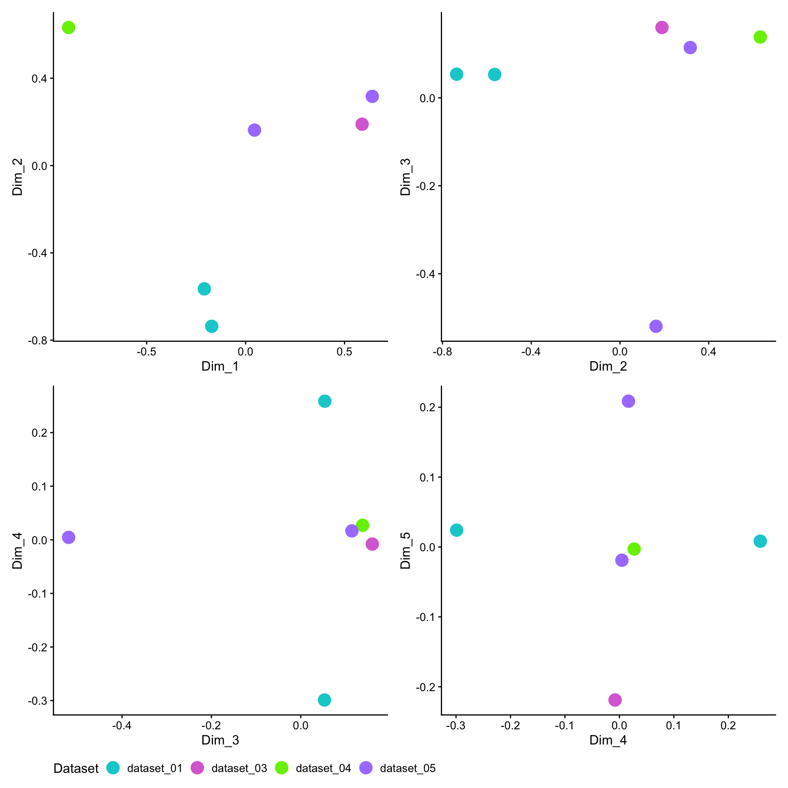
| Version | Author | Date |
|---|---|---|
| 522775a | Calandra Grima | 2026-08-04 |
| b42cc88 | calandra.grima | 2026-02-16 |
| e778664 | Calandra Grima | 2025-11-14 |
| 6f39b64 | Calandra Grima | 2025-04-14 |
| fabfd92 | Calandra Grima | 2025-04-04 |
| 6b756ec | Calandra Grima | 2025-03-28 |
| a829e36 | Calandra Grima | 2025-03-27 |
| 9e344bb | Calandra Grima | 2025-02-05 |
| e91b631 | Calandra Grima | 2025-01-15 |
| 83c91d4 | Calandra Grima | 2024-08-09 |
plotMDS.Dims1_5(MDS.housekeeping, "foetal_sex", ALL_FOETAL_SEX_COLOURS, makeFactor = T)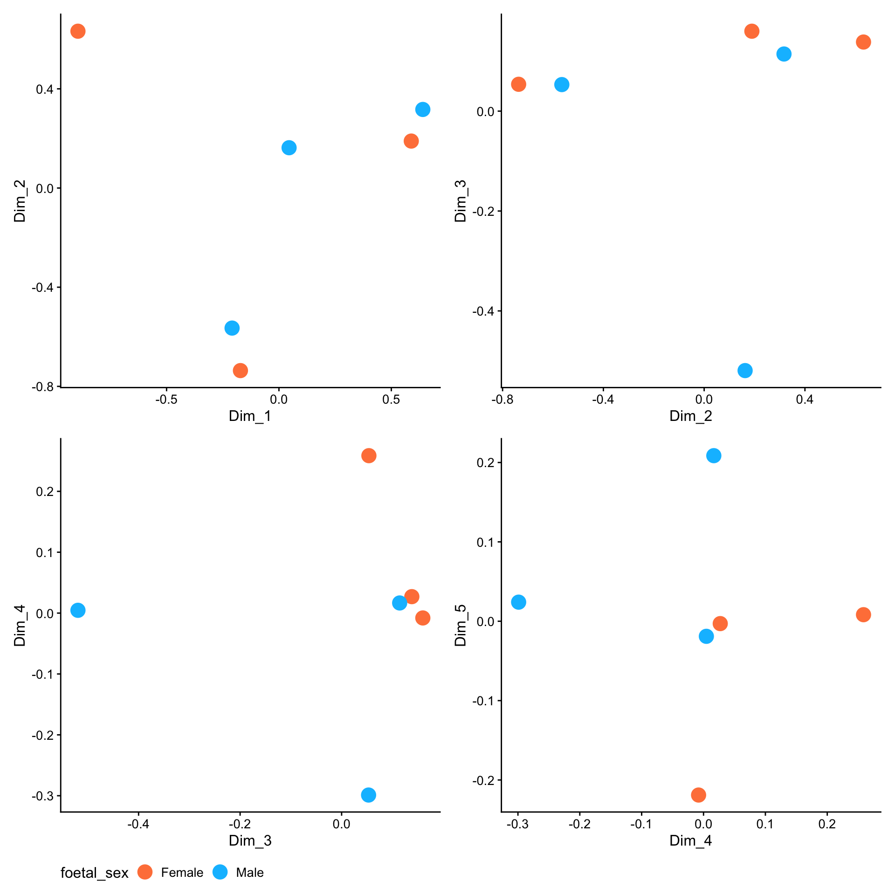
| Version | Author | Date |
|---|---|---|
| 522775a | Calandra Grima | 2026-08-04 |
| b42cc88 | calandra.grima | 2026-02-16 |
| e778664 | Calandra Grima | 2025-11-14 |
| 6f39b64 | Calandra Grima | 2025-04-14 |
| fabfd92 | Calandra Grima | 2025-04-04 |
| 6b756ec | Calandra Grima | 2025-03-28 |
| a829e36 | Calandra Grima | 2025-03-27 |
| 9e344bb | Calandra Grima | 2025-02-05 |
| e91b631 | Calandra Grima | 2025-01-15 |
| 83c91d4 | Calandra Grima | 2024-08-09 |
plotMDS.Dims1_5(MDS.housekeeping, "gest_age_weeks", makeFactor = TRUE)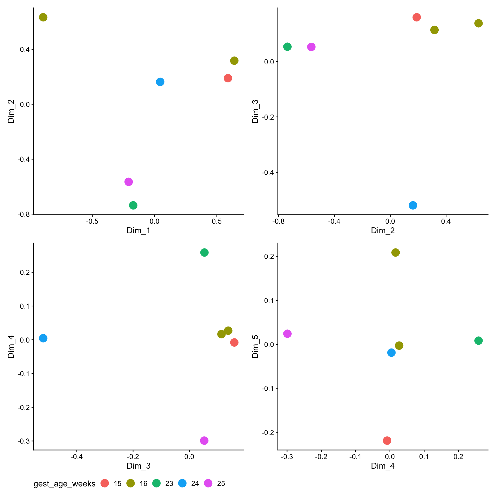
| Version | Author | Date |
|---|---|---|
| 522775a | Calandra Grima | 2026-08-04 |
| b42cc88 | calandra.grima | 2026-02-16 |
| e778664 | Calandra Grima | 2025-11-14 |
| 6f39b64 | Calandra Grima | 2025-04-14 |
| fabfd92 | Calandra Grima | 2025-04-04 |
| 6b756ec | Calandra Grima | 2025-03-28 |
| a829e36 | Calandra Grima | 2025-03-27 |
| 9e344bb | Calandra Grima | 2025-02-05 |
| e91b631 | Calandra Grima | 2025-01-15 |
| 83c91d4 | Calandra Grima | 2024-08-09 |
plotMDS.Dims1_5(MDS.housekeeping, "early_late_gestation", ALL_GEST_COLOURS)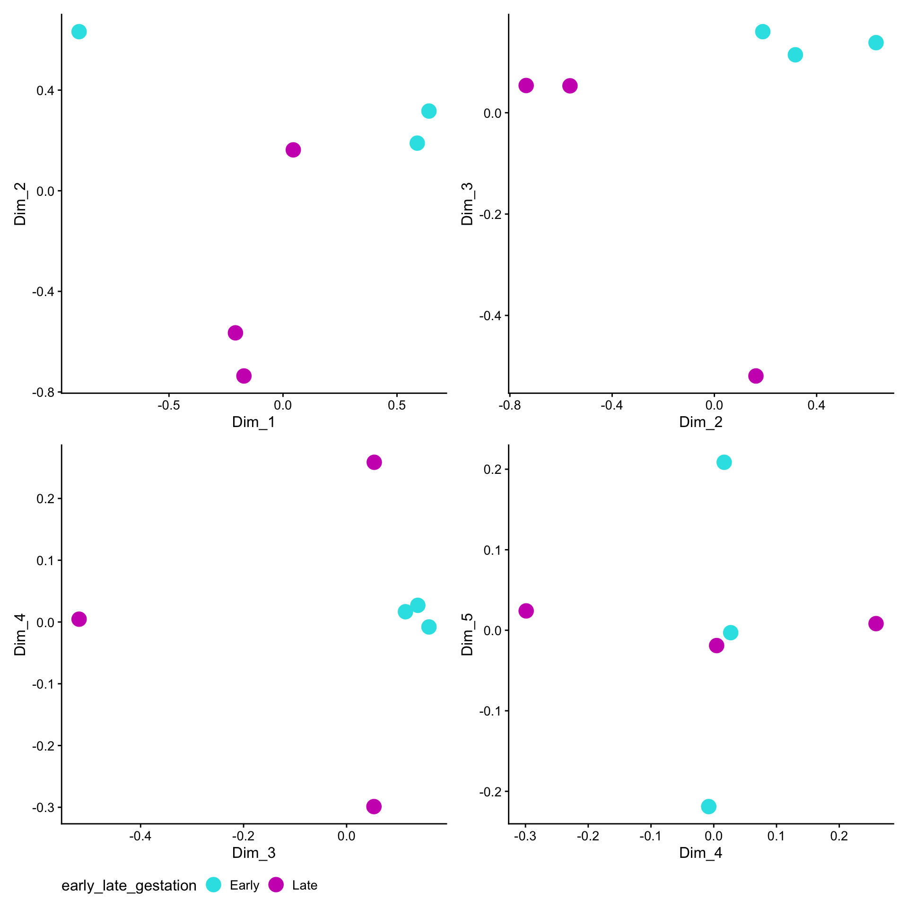
plotMDS.Dims1_5(MDS.housekeeping, "cmv_status", makeFactor = TRUE)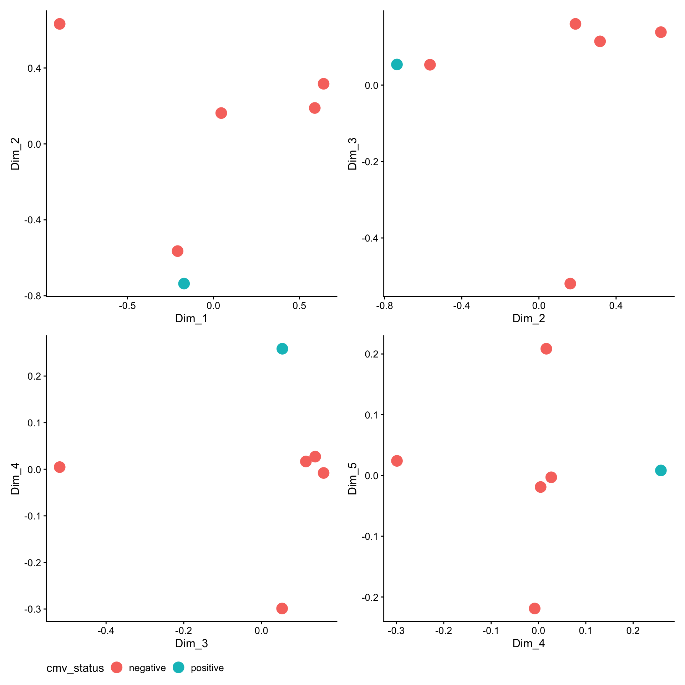
plotMDS.Dims1_5(MDS.housekeeping, "n_cells")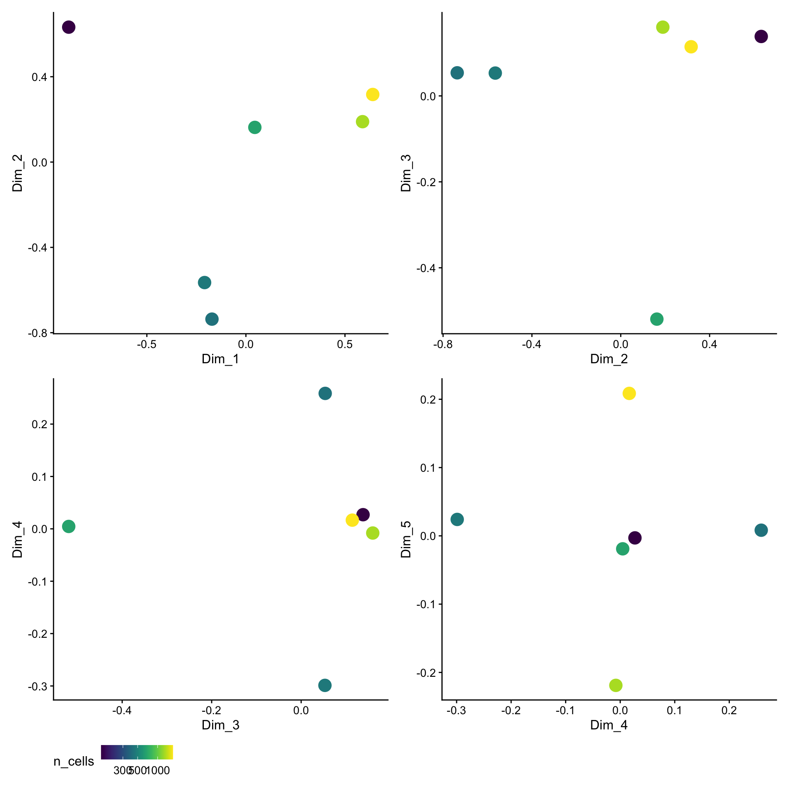
plotMDS.Dims1_5(MDS.housekeeping, "cluster_names", CLUSTER_NAME_COLOURS)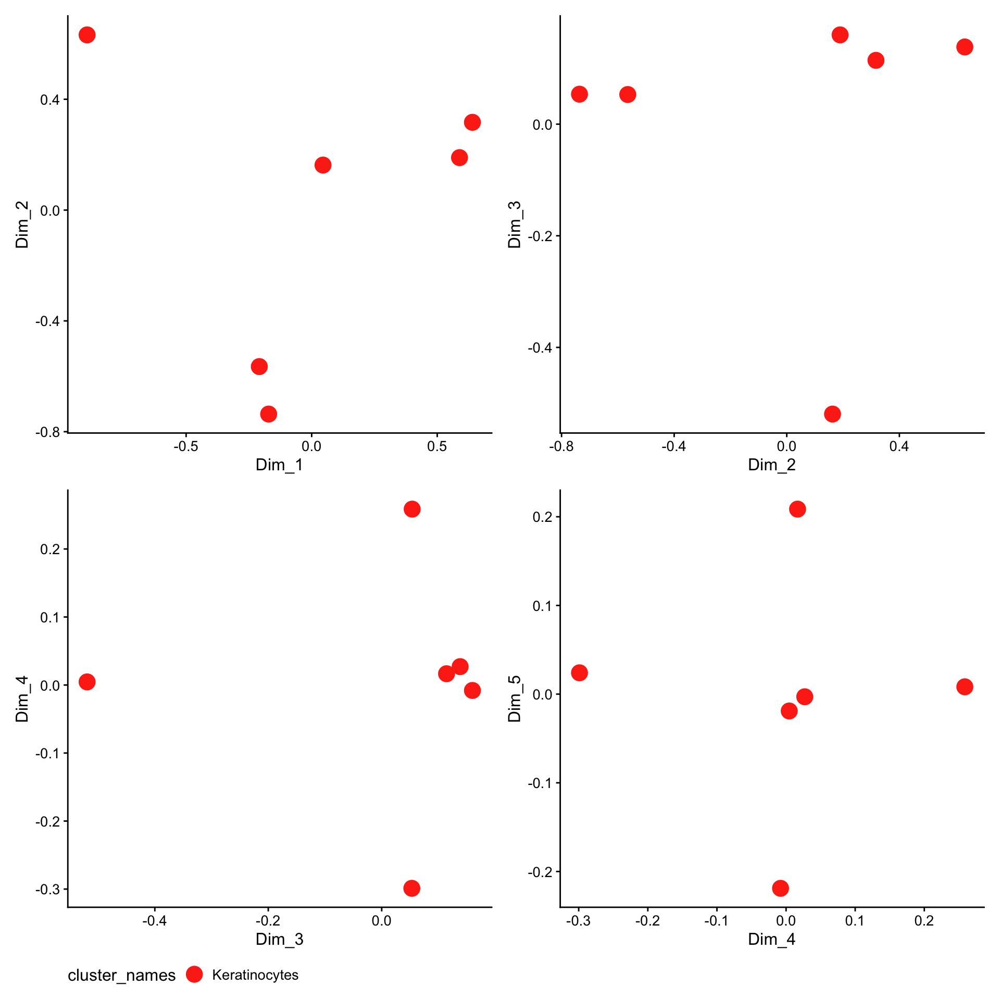
| Version | Author | Date |
|---|---|---|
| abd2114 | Calandra Grima | 2026-10-02 |
| aa8cf36 | Calandra Grima | 2026-09-16 |
| 522775a | Calandra Grima | 2026-08-04 |
| fabfd92 | Calandra Grima | 2025-04-04 |
| 6b756ec | Calandra Grima | 2025-03-28 |
| a829e36 | Calandra Grima | 2025-03-27 |
| 9e344bb | Calandra Grima | 2025-02-05 |
| e91b631 | Calandra Grima | 2025-01-15 |
| 83c91d4 | Calandra Grima | 2024-08-09 |
plotMDS.Dims1_5(MDS.housekeeping, "sample_type", makeFactor = TRUE)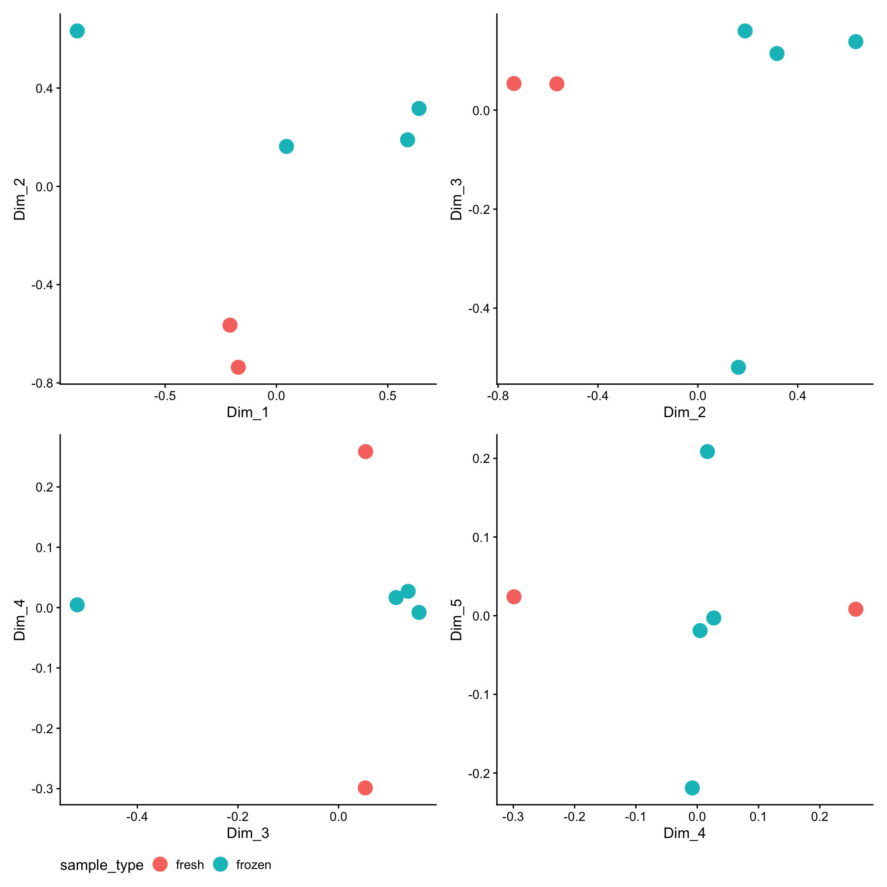
| Version | Author | Date |
|---|---|---|
| e069b3a | Calandra Grima | 2026-09-04 |
Investigate whether housekeeping genes correlate with any known covariates.
PCs <- prcomp(t(edgeR::cpm(ySub$counts[ctl, ], log = TRUE)),
center = TRUE, retx = TRUE)
loadings = PCs$x # pc loadings
nGenes = nrow(ySub)
nSamples = ncol(ySub)
datTraits <- ySub$samples %>% dplyr::select(Dataset, Donor.Paper,
gest_age_weeks, foetal_sex,
ncells, cluster_names,
sample_type) %>%
mutate(Dataset = factor(Dataset),
Donor.Paper = factor(Donor.Paper),
foetal_sex = factor(foetal_sex),
cluster_names = factor(cluster_names),
sample_type = factor(sample_type)) %>%
mutate(across(everything(), as.numeric))
moduleTraitCor <- suppressWarnings(cor(loadings[, 1:min(10, nSamples)],
datTraits, use = "p"))
moduleTraitPvalue <- WGCNA::corPvalueStudent(moduleTraitCor, (nSamples-2))
textMatrix <- paste(signif(moduleTraitCor, 2), "\n(",
signif(moduleTraitPvalue, 1), ")", sep = "")
dim(textMatrix) <- dim(moduleTraitCor)par(mfrow = c(2, 1))
plot(PCs, type="lines", main = chosen_cells) # scree plot
## Display the correlation values within a heatmap plot
par(cex=0.75, mar = c(3, 5, 2, 1))
WGCNA::labeledHeatmap(Matrix = t(moduleTraitCor),
xLabels = colnames(loadings)[1:min(10, nSamples)],
yLabels = names(datTraits),
colorLabels = FALSE,
colors = WGCNA::blueWhiteRed(6),
textMatrix = t(textMatrix),
setStdMargins = FALSE,
cex.text = 1,
zlim = c(-1,1),
main = paste0("PCA-trait relationships: Top ",
min(10, nSamples),
" PCs"))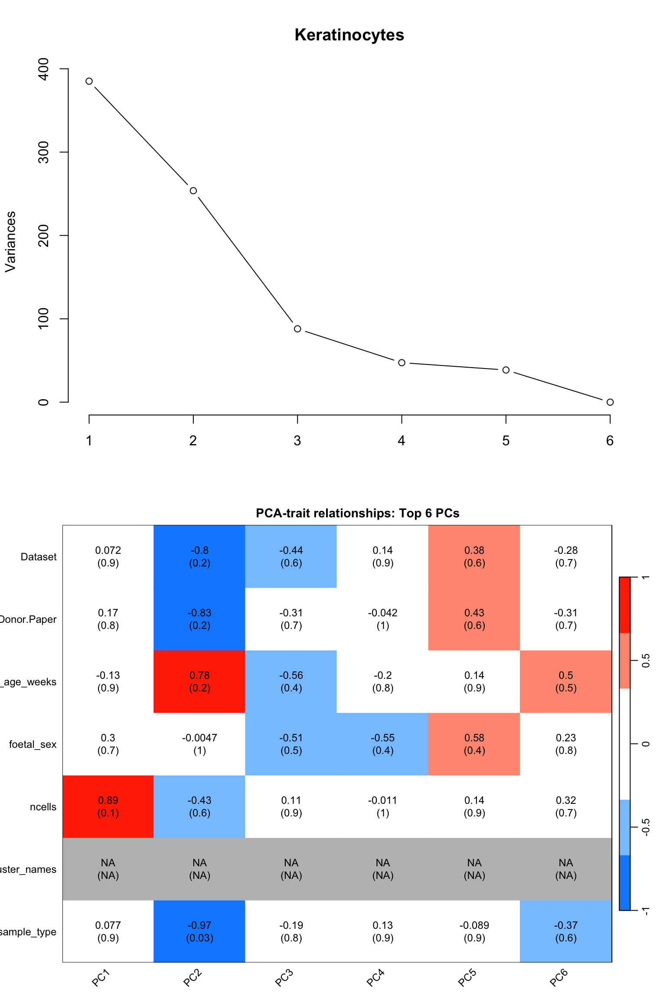
| Version | Author | Date |
|---|---|---|
| aa8cf36 | Calandra Grima | 2026-09-16 |
| e069b3a | Calandra Grima | 2026-09-04 |
| 522775a | Calandra Grima | 2026-08-04 |
| b42cc88 | calandra.grima | 2026-02-16 |
| e778664 | Calandra Grima | 2025-11-14 |
| fabfd92 | Calandra Grima | 2025-04-04 |
| 6b756ec | Calandra Grima | 2025-03-28 |
| a829e36 | Calandra Grima | 2025-03-27 |
| 9e344bb | Calandra Grima | 2025-02-05 |
| e91b631 | Calandra Grima | 2025-01-15 |
| 83c91d4 | Calandra Grima | 2024-08-09 |
First, we need to select k for use with RUVseq. Examine the structure of the raw pseudobulk data.
x1 <- as.factor(ySub$samples$Dataset)
cols1 <- RColorBrewer::brewer.pal(7, "Set2")
par(mfrow = c(1,3))
EDASeq::plotRLE(edgeR::cpm(ySub$counts),
col = cols1[x1], ylim = c(-0.5, 0.5),
main = "Raw RLE by Dataset", las = 2)
EDASeq::plotPCA(edgeR::cpm(ySub$counts),
col = cols1[x1], labels = FALSE,
pch = 19, main = "Raw PCA by Dataset")
x2 <- as.factor(ySub$samples$gest_age_weeks)
cols2 <- RColorBrewer::brewer.pal(4, "Set1")
EDASeq::plotPCA(edgeR::cpm(ySub$counts),
col = cols2[x2], labels = FALSE,
pch = 19, main = "Raw PCA by gest_age_weeks")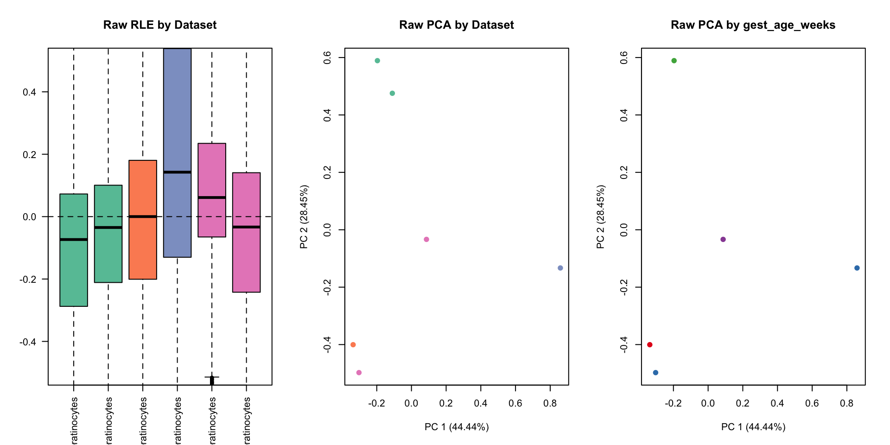
| Version | Author | Date |
|---|---|---|
| aa8cf36 | Calandra Grima | 2026-09-16 |
| 522775a | Calandra Grima | 2026-08-04 |
| b42cc88 | calandra.grima | 2026-02-16 |
| e778664 | Calandra Grima | 2025-11-14 |
| 6f39b64 | Calandra Grima | 2025-04-14 |
| fabfd92 | Calandra Grima | 2025-04-04 |
| 6b756ec | Calandra Grima | 2025-03-28 |
| a829e36 | Calandra Grima | 2025-03-27 |
| 9e344bb | Calandra Grima | 2025-02-05 |
| e91b631 | Calandra Grima | 2025-01-15 |
| 83c91d4 | Calandra Grima | 2024-08-09 |
Select the value for the k parameter i.e. the number of columns of the W matrix that will be included in the modelling.
# define the sample groups
gest_age_weeks <- ySub$samples$gest_age_weeks
cluster_names <- factor(ySub$samples$cluster_names)
foetal_sex <- factor(ySub$samples$foetal_sex)
Donor.Paper <- factor(ySub$samples$Donor.Paper)
Dataset <- factor(ySub$samples$Dataset)
early_late_gestation <- factor(gsub(" ", "_", ySub$samples$early_late_gestation))
sample_type <- factor(ySub$samples$sample_type)
for(k in 1:max_k){
adj <- RUVg(ySub$counts, ctl, k = k)
W <- adj$W
# create the design matrix
design <- model.matrix(~0 + early_late_gestation + W + foetal_sex)
colnames(design)[1:length(levels(early_late_gestation))] <- levels(early_late_gestation)
contr <- makeContrasts(EarlyvLate = Early - Late,
levels = design)
y <- DGEList(counts = ySub$counts)
y <- calcNormFactors(y)
y <- estimateGLMCommonDisp(y, design)
y <- estimateGLMTagwiseDisp(y, design)
fit <- glmFit(y, design)
x1 <- as.factor(ySub$samples$Dataset)
cols1 <- ALL_DATASETS_COLOURS
par(mfrow = c(2,3))
EDASeq::plotRLE(edgeR::cpm(adj$normalizedCounts),
col = cols1[x1], ylim = c(-0.5, 0.5),
main = paste0("K = ", k, " RLE by Dataset"))
EDASeq::plotPCA(edgeR::cpm(adj$normalizedCounts),
col = cols1[x1], labels = FALSE,
pch = 19,
main = paste0("K = ", k, " PCA by Dataset"))
x2 <- as.factor(ySub$samples$early_late_gestation)
cols2 <- ALL_GEST_COLOURS
EDASeq::plotPCA(edgeR::cpm(adj$normalizedCounts),
col = cols2[x2], labels = FALSE,
pch = 19,
main = paste0("K = ", k, " PCA by early_late_gestation"))
lrt <- glmLRT(fit, contrast = contr[, 1])
hist(lrt$table$PValue, main = paste0("K = ", k, " ", colnames(contr)[1]),
cex.main = 0.8)
}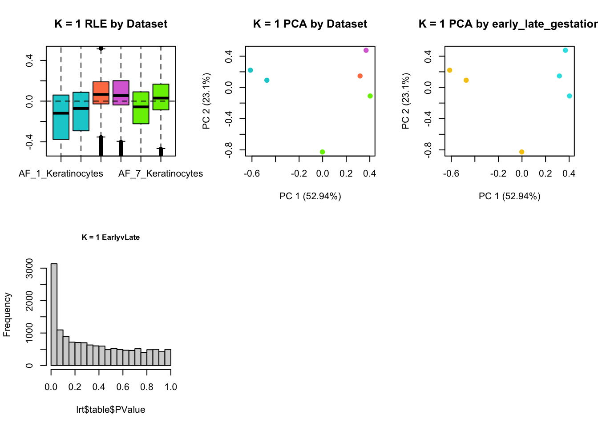
| Version | Author | Date |
|---|---|---|
| aa8cf36 | Calandra Grima | 2026-09-16 |
| 522775a | Calandra Grima | 2026-08-04 |
| b42cc88 | calandra.grima | 2026-02-16 |
| e778664 | Calandra Grima | 2025-11-14 |
| 6f39b64 | Calandra Grima | 2025-04-14 |
| fabfd92 | Calandra Grima | 2025-04-04 |
| 79240df | Calandra Grima | 2025-04-02 |
| 6b756ec | Calandra Grima | 2025-03-28 |
| a829e36 | Calandra Grima | 2025-03-27 |
| 9e344bb | Calandra Grima | 2025-02-05 |
| e91b631 | Calandra Grima | 2025-01-15 |
| 83c91d4 | Calandra Grima | 2024-08-09 |
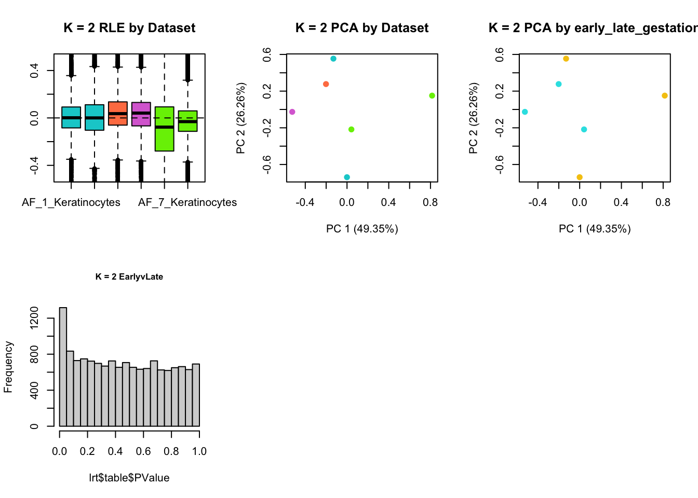
| Version | Author | Date |
|---|---|---|
| aa8cf36 | Calandra Grima | 2026-09-16 |
| 522775a | Calandra Grima | 2026-08-04 |
| fabfd92 | Calandra Grima | 2025-04-04 |
| 79240df | Calandra Grima | 2025-04-02 |
| 6b756ec | Calandra Grima | 2025-03-28 |
| a829e36 | Calandra Grima | 2025-03-27 |
| 9e344bb | Calandra Grima | 2025-02-05 |
| e91b631 | Calandra Grima | 2025-01-15 |
| 83c91d4 | Calandra Grima | 2024-08-09 |
Test for DGE using RUVSeq and edgeR.
# use RUVSeq to identify the factors of unwanted variation
adj <- RUVg(ySub$counts, ctl, k = 1)
W <- adj$W
# create the design matrix
design <- model.matrix(~ 0 + early_late_gestation + W + foetal_sex)
colnames(design)[1:length(levels(early_late_gestation))] <- levels(early_late_gestation)
design %>% knitr::kable()| Early | Late | W | foetal_sexMale |
|---|---|---|---|
| 0 | 1 | -0.0563106 | 0 |
| 0 | 1 | -0.0649395 | 1 |
| 1 | 0 | -0.4776016 | 0 |
| 1 | 0 | 0.6904792 | 0 |
| 0 | 1 | 0.3307161 | 1 |
| 1 | 0 | -0.4223436 | 1 |
edgeR::cpm(ySub$counts, log = TRUE) %>%
data.frame %>%
rownames_to_column(var = "gene") %>%
pivot_longer(-gene,
names_to = "sample",
values_to = "raw") %>%
inner_join(edgeR::cpm(adj$normalizedCounts, log = TRUE) %>%
data.frame %>%
rownames_to_column(var = "gene") %>%
pivot_longer(-gene,
names_to = "sample",
values_to = "norm")) %>%
mutate(sample = gsub("^X", "", sample)) %>%
left_join(rownames_to_column(ySub$samples,
var = "sample")) %>%
mutate(Dataset = as.factor(Dataset)) %>%
dplyr::filter(gene %in% c("ZFY", "EIF1AY", "XIST")) %>%
ggplot(aes(x = foetal_sex,
y = norm,
colour = foetal_sex)) +
geom_boxplot(outlier.shape = NA, colour = "grey") +
geom_jitter(stat = "identity",
width = 0.15,
size = 1.25) +
geom_jitter(aes(x = foetal_sex,
y = raw), stat = "identity",
width = 0.15,
size = 2,
alpha = 0.2,
stroke = 0) +
ggrepel::geom_text_repel(aes(label = sample),
size = 2) +
theme_classic() +
theme(axis.text.x = element_text(angle = 90,
hjust = 1,
vjust = 0.5),
legend.position = "bottom",
legend.direction = "horizontal",
strip.text = element_text(size = 7),
axis.text.y = element_text(size = 6)) +
labs(x = "Group", y = "log2 CPM") +
facet_wrap(~gene, scales = "free_y") +
scale_color_brewer(palette = "Set2") +
ggtitle("Sex gene expression check") -> p2Joining with `by = join_by(gene, sample)`
Joining with `by = join_by(sample)`p2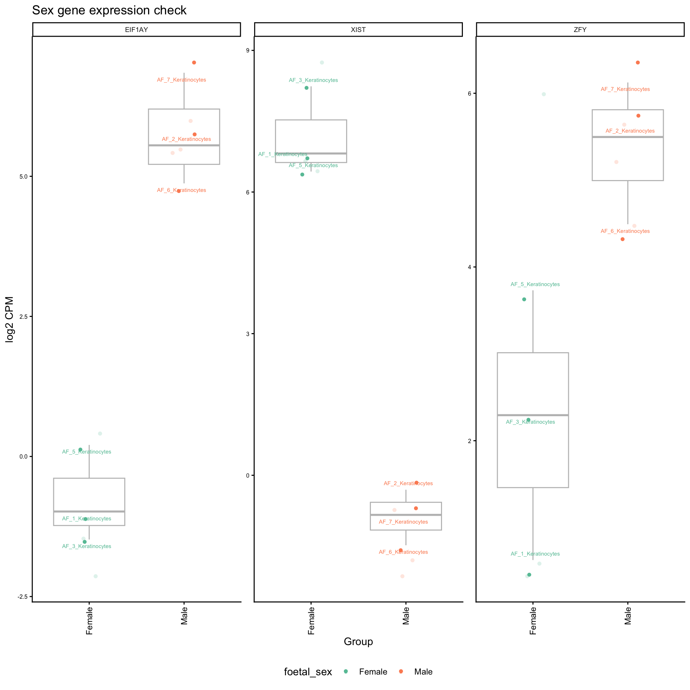
| Version | Author | Date |
|---|---|---|
| aa8cf36 | Calandra Grima | 2026-09-16 |
| 522775a | Calandra Grima | 2026-08-04 |
| b42cc88 | calandra.grima | 2026-02-16 |
| e778664 | Calandra Grima | 2025-11-14 |
| fabfd92 | Calandra Grima | 2025-04-04 |
| 6b756ec | Calandra Grima | 2025-03-28 |
| a829e36 | Calandra Grima | 2025-03-27 |
| 9e344bb | Calandra Grima | 2025-02-05 |
| e91b631 | Calandra Grima | 2025-01-15 |
| 83c91d4 | Calandra Grima | 2024-08-09 |
# Make the contrast matrix for the comparisons
contr <- makeContrasts(EarlyvLate = Early - Late, levels = design)
contr %>% knitr::kable()| EarlyvLate | |
|---|---|
| Early | 1 |
| Late | -1 |
| W | 0 |
| foetal_sexMale | 0 |
saveRDS(contr, here("data", "workflow", "AmnioSC.dge_early_vs_late.contr.rds"))y <- DGEList(counts = ySub$counts)
y <- calcNormFactors(y)
y <- estimateGLMCommonDisp(y, design)
y <- estimateGLMTagwiseDisp(y, design)
fit <- glmFit(y, design)
saveRDS(fit, here("data", "workflow", "AmnioSC.dge_early_vs_late.fit.rds"))Note that Up (red) means more highly expressed in Early Gestation and Down (blue) means more highly expressed in Late Gestation.
# DGE results summary
cutoff <- 0.05
dt <- lapply(1:ncol(contr), function(i){
decideTests(glmLRT(fit, contrast = contr[,i]),
p.value = cutoff)
})
s <- sapply(dt, function(d){
summary(d)
})
colnames(s) <- colnames(contr)
rownames(s) <- c("Down", "NotSig", "Up")
pal <- c(paletteer::paletteer_d("RColorBrewer::Set1")[2:1], "grey")
s[-2,] %>%
data.frame %>%
rownames_to_column(var = "Direction") %>%
pivot_longer(-Direction) %>% mutate(name = "Early vs. Late") %>%
ggplot(aes(x = name, y = value, fill = Direction)) +
geom_col(position = "dodge") +
geom_text(aes(label = value),
position = position_dodge(width = 0.9),
vjust = -0.5,
size = 5) +
labs(y = glue::glue("No. DGE (FDR < {cutoff})"),
x = "Contrast") +
scale_fill_manual(values = pal) +
theme(axis.text.x = element_text(angle = 45,
hjust = 1,
vjust = 1)) +
scale_fill_manual(values = pal) +
theme_cowplot(12) + bottom_legendScale for fill is already present.
Adding another scale for fill, which will replace the existing scale.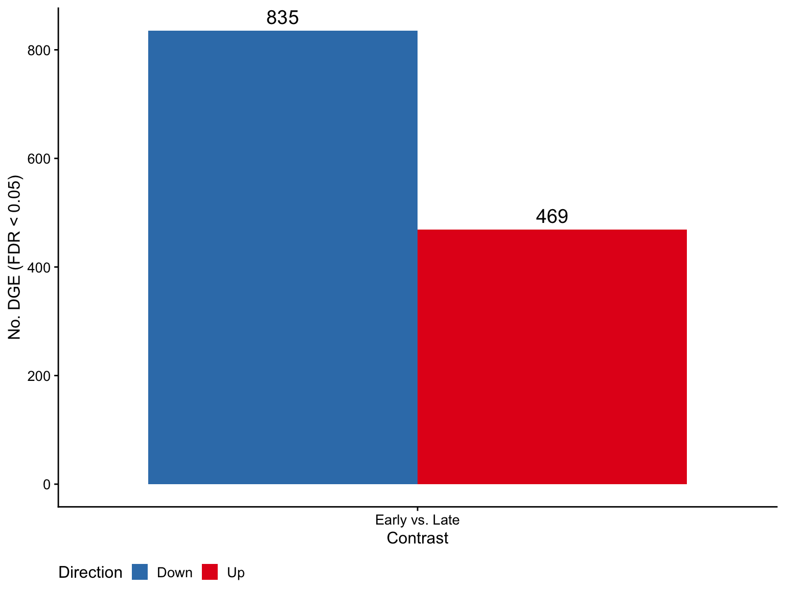
Explore results of statistical analysis for each contrast with
significant DGEs. Also, perform gene set enrichment analysis (GSEA)
using the cameraPR method. cameraPR tests
whether a set of genes is highly ranked relative to other genes in terms
of differential expression, accounting for inter-gene correlation.
Prepare the Broad MSigDB Gene Ontology, Hallmark gene sets and Reactome
pathways.
if(!file.exists(here("data/workflow/GSEA/Hs.c5.all.v7.1.entrez.rds")))
download.file("https://bioinf.wehi.edu.au/MSigDB/v7.1/Hs.c5.all.v7.1.entrez.rds",
here("data/workflow/GSEA/Hs.c5.all.v7.1.entrez.rds"))
Hs.c5.all <- readRDS(here("data/workflow/GSEA/Hs.c5.all.v7.1.entrez.rds"))
if(!file.exists(here("data/workflow/GSEA/Hs.c2.cp.reactome.v7.1.entrez.rds")))
download.file("https://bioinf.wehi.edu.au/MSigDB/v7.1/Hs.c2.cp.reactome.v7.1.entrez.rds",
here("data/workflow/GSEA/Hs.c2.cp.reactome.v7.1.entrez.rds"))
Hs.c2.reactome <- readRDS(here("data/workflow/GSEA/Hs.c2.cp.reactome.v7.1.entrez.rds"))
if(!file.exists(here("data/workflow/GSEA/Hs.h.all.v7.1.entrez.rds")))
download.file("https://bioinf.wehi.edu.au/MSigDB/v7.1/Hs.h.all.v7.1.entrez.rds",
here("data/workflow/GSEA/Hs.h.all.v7.1.entrez.rds"))
Hs.h.all <- readRDS(here("data/workflow/GSEA/Hs.h.all.v7.1.entrez.rds"))# translate gene SYMBOLS to entrez gene IDs
gns <- AnnotationDbi::mapIds(org.Hs.eg.db::org.Hs.eg.db,
keys = rownames(fit),
column = c("ENTREZID"),
keytype = "SYMBOL",
multiVals = "first")'select()' returned 1:many mapping between keys and columns# get transcript lengths
txdb <- TxDb.Hsapiens.UCSC.hg38.knownGene::TxDb.Hsapiens.UCSC.hg38.knownGene
txlen <- GenomicFeatures::transcriptLengths(txdb)
txlen %>%
dplyr::select(gene_id, tx_len) %>%
group_by(gene_id) %>%
summarise(max_len = max(tx_len)) %>%
dplyr::filter(gene_id %in% gns) -> supertxlen
m <- match(supertxlen$gene_id, gns)
all(supertxlen$gene_id == gns[m])[1] TRUE# Write significant DGEs for this comparison to file.
# set index for current contrast
i = 1
lrt <- glmLRT(fit, contrast = contr[,i])
topTags(lrt, n = Inf) %>%
data.frame -> top
saveRDS(top, here("data", "workflow", "AmnioSC.dge_early_vs_late.top.rds"))
saveRDS(lrt, here("data", "workflow", "AmnioSC.dge_early_vs_late.lrt.rds"))rmarkdown::paged_table(top %>% filter(logFC < 0, FDR < 0.05))rmarkdown::paged_table(top %>% filter(logFC > 0, FDR < 0.05))# run camera competitive gene set test
# use signed likelihood ratio test statistic as recommended by GS here: https://support.bioconductor.org/p/112937/
# fix floating point representation issue
lrt$table$LR <- pmax(lrt$table$LR, 0) # Converts all negative values to 0
statistic <- sign(lrt$table$logFC) * sqrt(lrt$table$LR)
# get gene indices for all gene set genes
h.id <- ids2indices(Hs.h.all, unname(gns[rownames(lrt)]))
c2.id <- ids2indices(Hs.c2.reactome, unname(gns[rownames(lrt)]))
c5.id <- ids2indices(Hs.c5.all, unname(gns[rownames(lrt)]))
h.cam <- cameraPR(statistic, h.id)
c2.cam <- cameraPR(statistic, c2.id)
c5.cam <- cameraPR(statistic, c5.id)
saveRDS(c5.cam, here("data", "workflow", "AmnioSC.dge_early_vs_late.c5.cam.RDS"))
saveRDS(c2.cam, here("data", "workflow", "AmnioSC.dge_early_vs_late.c2.cam.RDS"))# Volcano plot
top %>%
mutate(sig = ifelse(FDR <= cutoff, glue::glue("<= {cutoff}"),
glue::glue("> {cutoff}"))) %>%
rownames_to_column(var = "SYMBOL") %>%
left_join(dt[[i]][,1] %>%
data.frame %>%
rownames_to_column(var = "SYMBOL") %>%
dplyr::rename(status = 2)) %>%
mutate(status = ifelse(status == 1, "Up",
ifelse(status == -1, "Down",
"NotSig"))) %>%
mutate(status = as.factor(status)) %>%
mutate(status = fct_relevel(status, "NotSig", after = Inf)) %>%
ggplot(aes(x = logFC, y = -log10(PValue), color = status)) +
geom_point(alpha = 0.75) +
ggrepel::geom_text_repel(data = function(x) subset(x, FDR < cutoff),
aes(x = logFC, y = -log10(PValue),
label = SYMBOL),
size = 2, colour = "black", max.overlaps = 15) +
labs(x = expression(~log[2]~"(Fold Change)"),
y = expression(~-log[10]~"(P-value)"),
colour = glue::glue("FDR < {cutoff}")) +
scale_colour_manual(values = pal) +
theme_classic() +
theme(legend.position = "bottom") -> p1Joining with `by = join_by(SYMBOL)`p1Warning: ggrepel: 1128 unlabeled data points (too many overlaps). Consider
increasing max.overlaps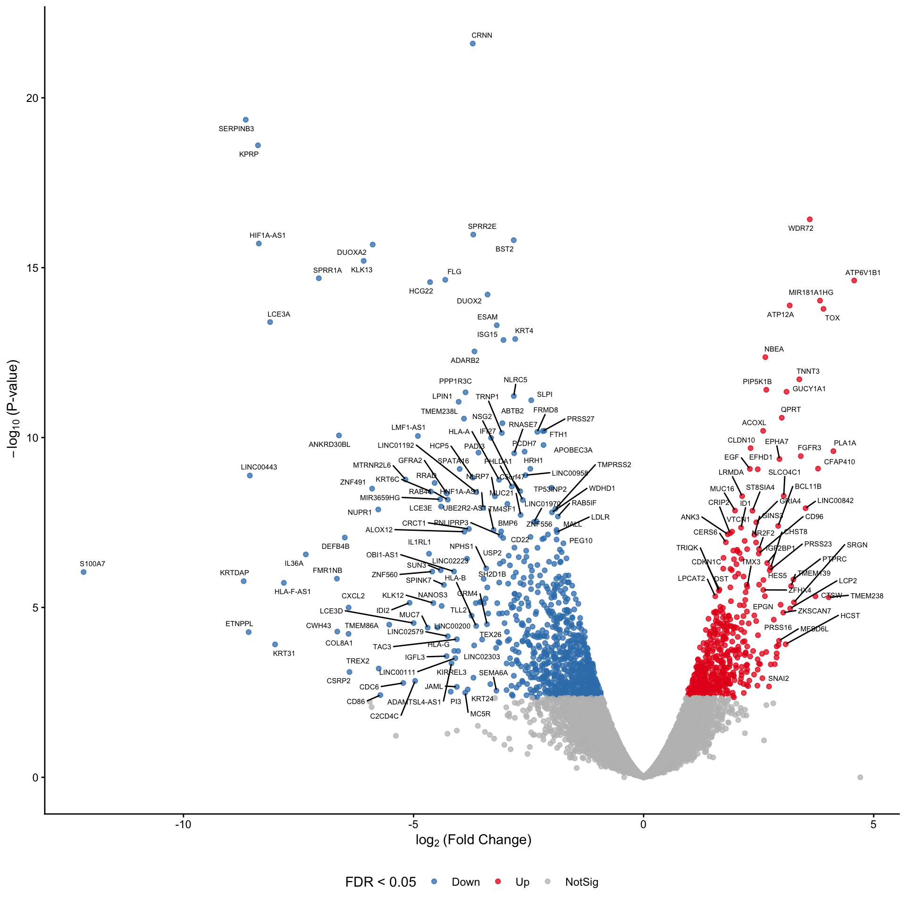
| Version | Author | Date |
|---|---|---|
| eea5a46 | Calandra Grima | 2026-10-13 |
| f381dd5 | Calandra Grima | 2026-08-11 |
| 522775a | Calandra Grima | 2026-08-04 |
| b42cc88 | calandra.grima | 2026-02-16 |
| e778664 | Calandra Grima | 2025-11-14 |
| 25e8e6f | Calandra Grima | 2025-08-27 |
| 6f39b64 | Calandra Grima | 2025-04-14 |
| fabfd92 | Calandra Grima | 2025-04-04 |
| 6b756ec | Calandra Grima | 2025-03-28 |
| a829e36 | Calandra Grima | 2025-03-27 |
| 9e344bb | Calandra Grima | 2025-02-05 |
| e91b631 | Calandra Grima | 2025-01-15 |
| 83c91d4 | Calandra Grima | 2024-08-09 |
# GSEA top 10 plots
h.cam %>%
dplyr::slice(1:10) %>%
rownames_to_column(var = "Set") %>%
mutate(Type = "HALLMARK",
Rank = 1:10) %>%
bind_rows(c2.cam %>%
dplyr::slice(1:10) %>%
rownames_to_column(var = "Set") %>%
mutate(Type = "REACTOME",
Rank = 1:10)) %>%
bind_rows(c5.cam %>%
dplyr::slice(1:10) %>%
rownames_to_column(var = "Set") %>%
mutate(Type = "GO",
Rank = 1:10)) %>%
mutate(Set = str_wrap(str_replace_all(Set, "_", " "), width = 75),
Set = str_remove_all(Set, "GO |REACTOME |HALLMARK ")) %>%
ggplot(aes(x = -log10(FDR), y = fct_reorder(Set, -Rank),
colour = Direction)) +
geom_point(aes(size = NGenes)) +
facet_wrap(~Type, ncol = 1, scales = "free_y") +
geom_vline(xintercept = -log10(0.05),
linetype = "dashed") +
scale_colour_manual(values = pal) +
labs(y = "Gene set") +
theme_classic(base_size = 10) -> p5
p5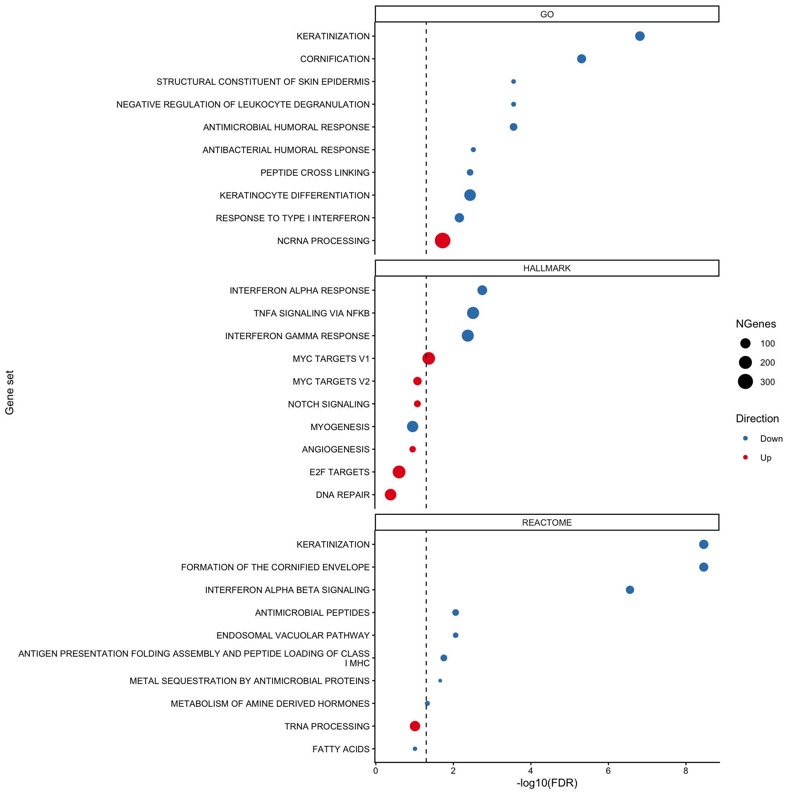
| Version | Author | Date |
|---|---|---|
| eea5a46 | Calandra Grima | 2026-10-13 |
| abd2114 | Calandra Grima | 2026-10-02 |
| 626f17f | Calandra Grima | 2026-09-30 |
| 4e7d782 | Calandra Grima | 2026-09-28 |
| aa8cf36 | Calandra Grima | 2026-09-16 |
| e069b3a | Calandra Grima | 2026-09-04 |
| f381dd5 | Calandra Grima | 2026-08-11 |
| 522775a | Calandra Grima | 2026-08-04 |
| a9957da | calandra.grima | 2026-02-19 |
| b42cc88 | calandra.grima | 2026-02-16 |
| e778664 | Calandra Grima | 2025-11-14 |
| 6f39b64 | Calandra Grima | 2025-04-14 |
| fabfd92 | Calandra Grima | 2025-04-04 |
| 79240df | Calandra Grima | 2025-04-02 |
| 6b756ec | Calandra Grima | 2025-03-28 |
| a829e36 | Calandra Grima | 2025-03-27 |
| 9e344bb | Calandra Grima | 2025-02-05 |
| e91b631 | Calandra Grima | 2025-01-15 |
| 83c91d4 | Calandra Grima | 2024-08-09 |
c5.cam %>%
dplyr::slice(1:10) %>%
rownames_to_column(var = "Set") %>%
mutate(Type = "GO",
Rank = 1:10) %>%
bind_rows(c2.cam %>%
dplyr::slice(1:10) %>%
rownames_to_column(var = "Set") %>%
mutate(Type = "REACTOME",
Rank = 1:10)) %>%
mutate(Set = str_wrap(str_replace_all(Set, "_", " "), width = 32),# was 75
Set = str_remove_all(Set, "GO |REACTOME |HALLMARK ")) %>%
ggplot(aes(x = -log10(FDR), y = fct_reorder(Set, -Rank),
colour = Direction)) +
geom_point(aes(size = NGenes)) +
facet_wrap(~Type, ncol = 1, scales = "free_y") +
geom_vline(xintercept = -log10(0.05),
linetype = "dashed") +
scale_colour_manual(values = pal) +
labs(y = "Gene Set") +
theme_cowplot(12) +
bottom_legend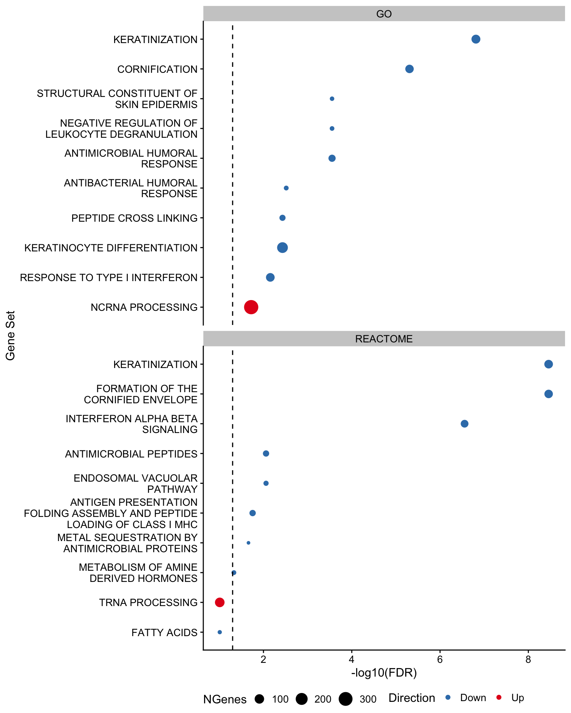
| Version | Author | Date |
|---|---|---|
| eea5a46 | Calandra Grima | 2026-10-13 |
| f381dd5 | Calandra Grima | 2026-08-11 |
| 522775a | Calandra Grima | 2026-08-04 |
| a9957da | calandra.grima | 2026-02-19 |
| b42cc88 | calandra.grima | 2026-02-16 |
| e778664 | Calandra Grima | 2025-11-14 |
| 6f39b64 | Calandra Grima | 2025-04-14 |
| 977d3e9 | Calandra Grima | 2025-04-07 |
| fabfd92 | Calandra Grima | 2025-04-04 |
| 79240df | Calandra Grima | 2025-04-02 |
c5.cam %>%
dplyr::slice(1:10) %>%
rownames_to_column(var = "Set") %>%
mutate(Type = "GO",
Rank = 1:10) %>%
mutate(Set = str_wrap(str_replace_all(Set, "_", " "), width = 32),# was 75
Set = str_remove_all(Set, "GO |REACTOME |HALLMARK ")) %>%
ggplot(aes(x = -log10(FDR), y = fct_reorder(Set, -Rank),
colour = Direction)) +
geom_point(aes(size = NGenes)) +
facet_wrap(~Type, ncol = 1, scales = "free_y") +
geom_vline(xintercept = -log10(0.05),
linetype = "dashed") +
scale_colour_manual(values = pal) +
labs(y = "Gene Set") +
theme_cowplot(12) +
bottom_legend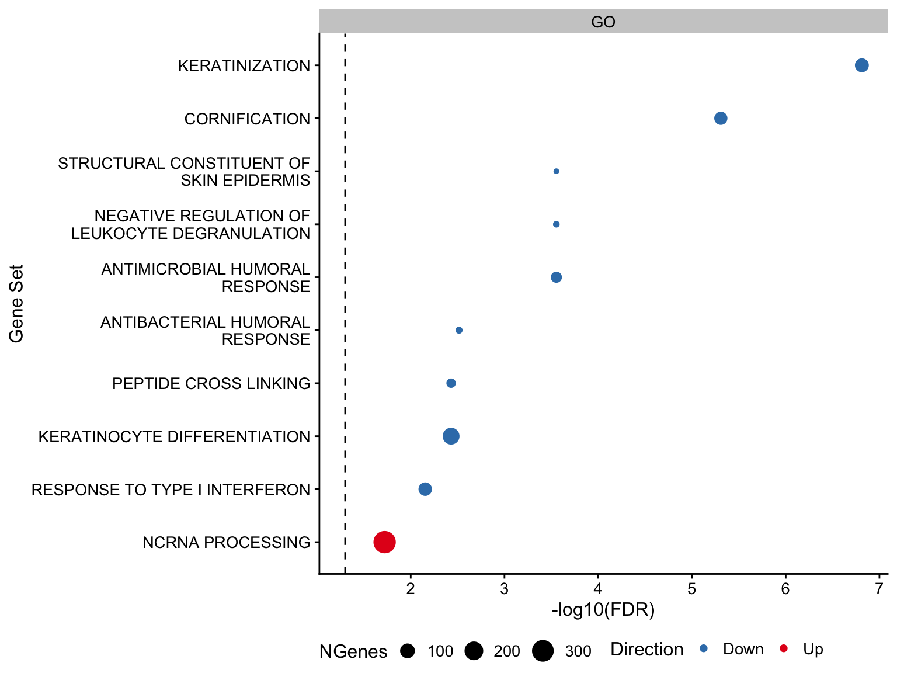
| Version | Author | Date |
|---|---|---|
| eea5a46 | Calandra Grima | 2026-10-13 |
| f381dd5 | Calandra Grima | 2026-08-11 |
| 522775a | Calandra Grima | 2026-08-04 |
| a9957da | calandra.grima | 2026-02-19 |
| b42cc88 | calandra.grima | 2026-02-16 |
| e778664 | Calandra Grima | 2025-11-14 |
| 2c6d248 | Calandra Grima | 2025-08-27 |
| 6f39b64 | Calandra Grima | 2025-04-14 |
| fabfd92 | Calandra Grima | 2025-04-04 |
c5.cam %>%
dplyr::slice(1:10) %>%
rownames_to_column(var = "Set") %>%
mutate(Type = "GO",
Rank = 1:10) %>%
bind_rows(c2.cam %>%
dplyr::slice(1:10) %>%
rownames_to_column(var = "Set") %>%
mutate(Type = "REACTOME",
Rank = 1:10)) %>%
mutate(Set = str_wrap(str_replace_all(Set, "_", " "), width = 32),# was 75
Set = str_remove_all(Set, "GO |REACTOME |HALLMARK ")) %>%
ggplot(aes(x = -log10(FDR), y = fct_reorder(Set, -Rank),
colour = Direction)) +
geom_point(aes(size = NGenes)) +
facet_wrap(Type~., ncol = 2, scales = "free_y") +
geom_vline(xintercept = -log10(0.05),
linetype = "dashed") +
scale_colour_manual(values = pal) +
labs(y = "") +
theme_cowplot(12) +
bottom_legend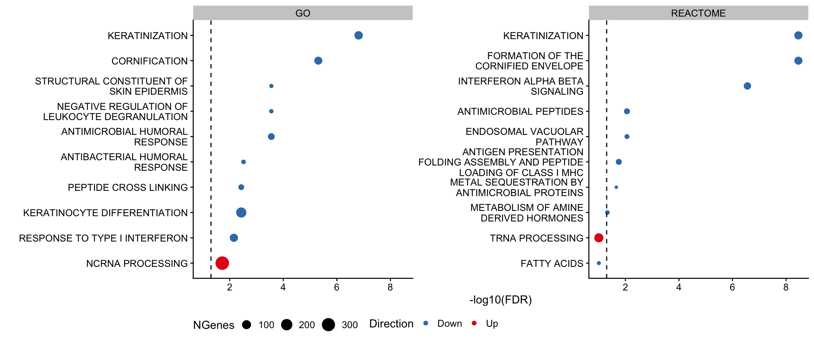
# Top DGE stripchart
# plot up to top 9 DGE
grps <- strsplit2(colnames(contr)[i], "v")[1,]
edgeR::cpm(ySub$counts, log = TRUE) %>%
data.frame %>%
rownames_to_column(var = "gene") %>%
pivot_longer(-gene,
names_to = "sample",
values_to = "raw") %>%
inner_join(edgeR::cpm(adj$normalizedCounts, log = TRUE) %>%
data.frame %>%
rownames_to_column(var = "gene") %>%
pivot_longer(-gene,
names_to = "sample",
values_to = "norm")) %>%
mutate(sample = gsub("^X", "", sample)) %>%
left_join(rownames_to_column(ySub$samples,
var = "sample")) %>%
mutate(Dataset = as.factor(Dataset),
early_late_gestation = gsub(" ", "_", early_late_gestation)) %>%
dplyr::filter(early_late_gestation %in% names(contr[,i])[abs(contr[,i]) > 0],
gene %in% rownames(top)[1:min(9, max(which(top$FDR < cutoff)))]) %>%
mutate(Group = early_late_gestation) %>%
ggplot(aes(x = Group,
y = norm,
colour = Group)) +
geom_boxplot(outlier.shape = NA, colour = "grey") +
geom_jitter(stat = "identity",
width = 0.15,
size = 1.25) +
geom_jitter(aes(x = Group,
y = raw), stat = "identity",
width = 0.15,
size = 1.25,
alpha = 0.2) +
theme_classic() +
theme(axis.text.x = element_text(angle = 90,
hjust = 1,
vjust = 0.5),
legend.position = "bottom",
legend.direction = "horizontal",
strip.text = element_text(size = 7),
axis.text.y = element_text(size = 6)) +
labs(x = "Group", y = "log2 CPM") +
facet_wrap(~gene, scales = "free_y") +
scale_color_brewer(palette = "Set2") +
ggtitle(colnames(contr)[i]) -> p2Joining with `by = join_by(gene, sample)`
Joining with `by = join_by(sample)`p2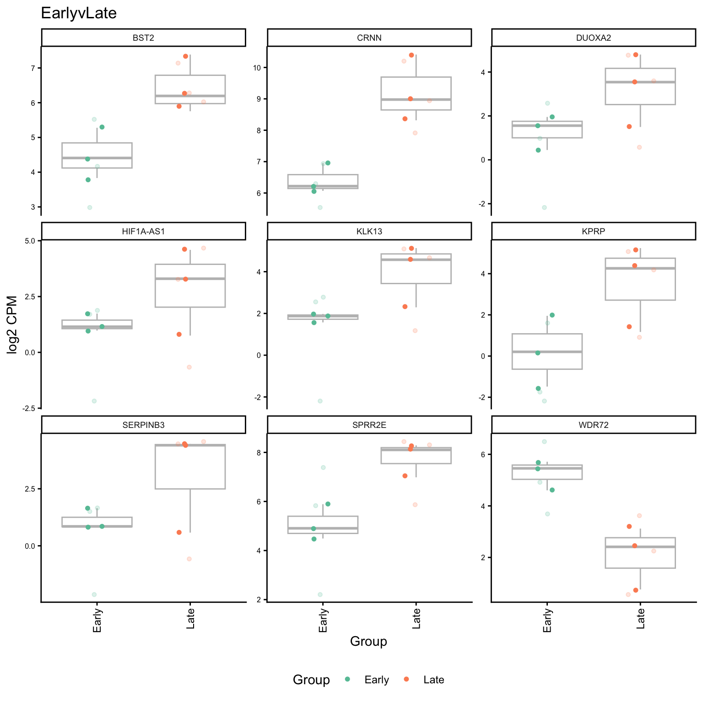
| Version | Author | Date |
|---|---|---|
| eea5a46 | Calandra Grima | 2026-10-13 |
| f381dd5 | Calandra Grima | 2026-08-11 |
| 522775a | Calandra Grima | 2026-08-04 |
| a9957da | calandra.grima | 2026-02-19 |
| b42cc88 | calandra.grima | 2026-02-16 |
| e778664 | Calandra Grima | 2025-11-14 |
| 2c6d248 | Calandra Grima | 2025-08-27 |
| bfd96f3 | Calandra Grima | 2025-02-19 |
| 9e344bb | Calandra Grima | 2025-02-05 |
| e91b631 | Calandra Grima | 2025-01-15 |
| 2e2c517 | Calandra Grima | 2024-09-11 |
# Examine all genes
deg <- rownames(top)[top$FDR < cutoff]
deg.entrez <- AnnotationDbi::mapIds(org.Hs.eg.db::org.Hs.eg.db, keys = deg,
column = "ENTREZID", keytype = "SYMBOL")'select()' returned 1:many mapping between keys and columnsgo_terms.all <- goana(unique(deg.entrez), species = "Hs", universe = NULL)
go_terms <- go_terms.all
go_terms <- go_terms[order(go_terms$P.DE),]
# Only keeping biological process terms that are not overly general.
go_terms <- go_terms[go_terms$Ont=="BP",]
go_terms <- go_terms[go_terms$N <= 500,]
go_terms <- as.data.frame(go_terms)
rmarkdown::paged_table(go_terms)# Examine Up genes (higher expression in Early Gestation)
deg.up <- rownames(top)[top$FDR < cutoff & top$logFC > 0]
deg.up.entrez <- AnnotationDbi::mapIds(org.Hs.eg.db::org.Hs.eg.db, keys = deg.up,
column = "ENTREZID", keytype = "SYMBOL")'select()' returned 1:1 mapping between keys and columnsgo_terms.up <- goana(unique(deg.up.entrez), species = "Hs", universe = NULL)
go_terms.up <- go_terms.up[order(go_terms.up$P.DE),]
# Only keeping biological process terms that are not overly general.
go_terms.up <- go_terms.up[go_terms.up$Ont=="BP",]
go_terms.up <- go_terms.up[go_terms.up$N <= 500,]
go_terms.up <- as.data.frame(go_terms.up)
rmarkdown::paged_table(go_terms.up)# Examine Down genes (higher expression in Late Gestation)
deg.down <- rownames(top)[top$FDR < cutoff & top$logFC < 0]
deg.down.entrez <- AnnotationDbi::mapIds(org.Hs.eg.db::org.Hs.eg.db, keys = deg.down,
column = "ENTREZID", keytype = "SYMBOL")'select()' returned 1:many mapping between keys and columnsgo_terms.down <- goana(unique(deg.down.entrez), species = "Hs", universe = NULL)
go_terms.down <- go_terms.down[order(go_terms.down$P.DE),]
# Only keeping biological process terms that are not overly general.
go_terms.down <- go_terms.down[go_terms.down$Ont=="BP",]
go_terms.down <- go_terms.down[go_terms.down$N <= 500,]
go_terms.down <- as.data.frame(go_terms.down)
rmarkdown::paged_table(go_terms.down)https://www.genenames.org/data/genegroup/#!/group/1354
https://en.wikipedia.org/wiki/Epidermal_differentiation_complex
EDC_GENES <- read_tsv(file = here("data", "edc_genes.txt"))Rows: 64 Columns: 13
── Column specification ────────────────────────────────────────────────────────
Delimiter: "\t"
chr (11): HGNC ID, Approved symbol, Approved name, Status, Locus type, Previ...
dbl (2): NCBI Gene ID, Group ID
ℹ Use `spec()` to retrieve the full column specification for this data.
ℹ Specify the column types or set `show_col_types = FALSE` to quiet this message.EDC_GENES <- EDC_GENES$`Approved symbol`table(deg.down %in% EDC_GENES)
FALSE TRUE
820 15 table(EDC_GENES %in% deg.down)
FALSE TRUE
49 15 table(deg.up %in% EDC_GENES)
FALSE TRUE
468 1 table(EDC_GENES %in% deg.up)
FALSE TRUE
63 1 to_plot <- c(EDC_GENES[EDC_GENES %in% deg.down], EDC_GENES[EDC_GENES %in% deg.up])
seu_int$early_late_gestation <- factor(seu_int$early_late_gestation)
Seurat::VlnPlot(seu_int, features = to_plot, group.by = "early_late_gestation")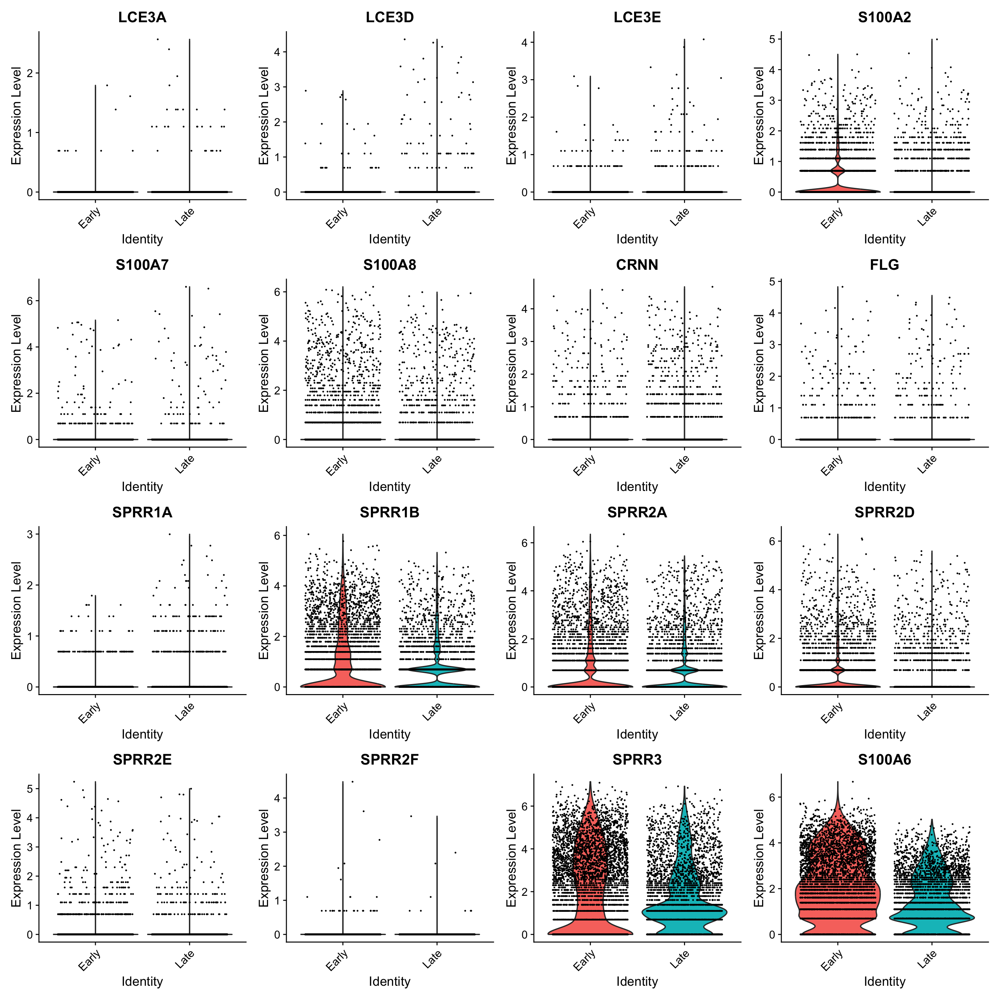
| Version | Author | Date |
|---|---|---|
| 81f481f | Calandra Grima | 2026-10-13 |
| 4e7d782 | Calandra Grima | 2026-09-28 |
| 522775a | Calandra Grima | 2026-08-04 |
| a9957da | calandra.grima | 2026-02-19 |
| e778664 | Calandra Grima | 2025-11-14 |
| 2c6d248 | Calandra Grima | 2025-08-27 |
| 79240df | Calandra Grima | 2025-04-02 |
| 6b756ec | Calandra Grima | 2025-03-28 |
| a829e36 | Calandra Grima | 2025-03-27 |
| bfd96f3 | Calandra Grima | 2025-02-19 |
edc.entrez <- AnnotationDbi::mapIds(org.Hs.eg.db::org.Hs.eg.db,
keys = EDC_GENES,
column = c("ENTREZID"),
keytype = "SYMBOL",
multiVals = "first")'select()' returned 1:1 mapping between keys and columnsedc.id <- ids2indices(edc.entrez, unname(gns[rownames(lrt)]))
edc.cam <- cameraPR(statistic, edc.id)
edc.cam NGenes Direction PValue
Set1 33 Down 2.686662e-13EDC genes are enriched within the genes upregulated in late gestation. This is significant.
barcodeplot(statistic,
index = edc.id$Set1,
main = "EDC in our dataset")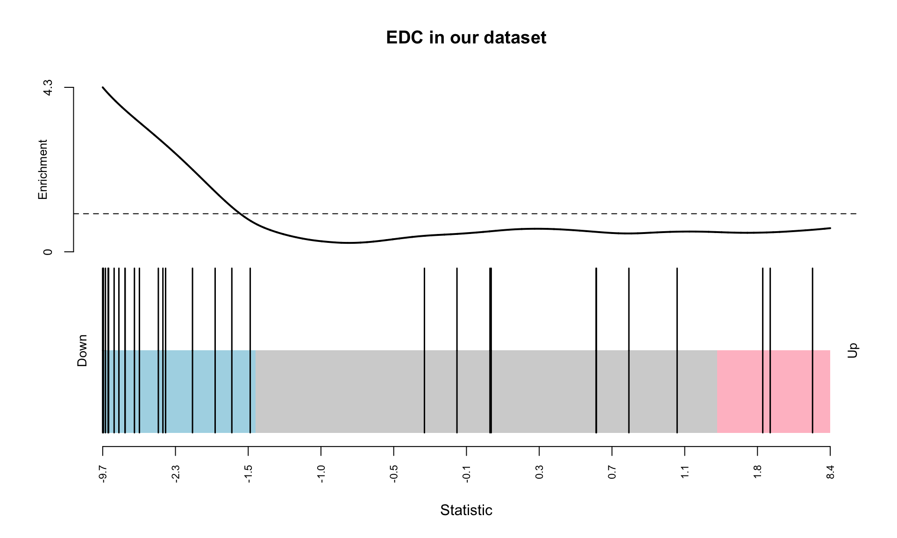
# blue and red bars at -1 and 1 quantilesedc.stats <- data.frame(edc_gene = rownames(lrt$table[edc.id$Set1,]),
stat = statistic[edc.id$Set1])
edc.stats %>% arrange(stat) edc_gene stat
1 CRNN -9.71757413
2 SPRR2E -8.29753144
3 SPRR1A -7.93832782
4 FLG -7.92535382
5 LCE3A -7.56124117
6 LCE3E -5.71898560
7 S100A7 -4.90987168
8 SPRR2A -4.86399174
9 S100A2 -4.82269342
10 LCE3D -4.18149596
11 SPRR2F -3.83038979
12 SPRR2D -3.48508705
13 SPRR3 -3.48399885
14 S100A8 -3.11707301
15 SPRR1B -2.96654112
16 S100A3 -2.55094088
17 S100G -2.47742009
18 TCHHL1 -2.44526591
19 TCHH -2.02808159
20 S100A12 -1.77433736
21 S100A9 -1.62118823
22 SPRR5 -1.46108944
23 S100A16 -0.34458356
24 S100A4 -0.16506238
25 S100Z 0.01509649
26 IVL 0.02294740
27 S100A11 0.59276771
28 S100A14 0.59620139
29 S100A10 0.79803656
30 RPTN 1.09203736
31 S100P 1.91209282
32 S100A13 2.01661450
33 S100A6 3.12221713seu_int <- AddModuleScore(seu_int, features = list(EDC_GENES), name = "EDC_genes", ctrl = 5)Warning: The following features are not present in the object: LORICRIN, LCE1B,
LCE1C, LCE1D, LCE1E, LCE1F, LCE2A, LCE2B, LCE2D, LCE3B, LCE3C, LCE4A, LCE6A,
LCE7A, S100A15A, S100A7L2, S100A7P1, S100A7P2, SPRR2C, SPRR4, not searching for
symbol synonymsFeaturePlot(seu_int, "EDC_genes1", split.by = "early_late_gestation") + bottom_legend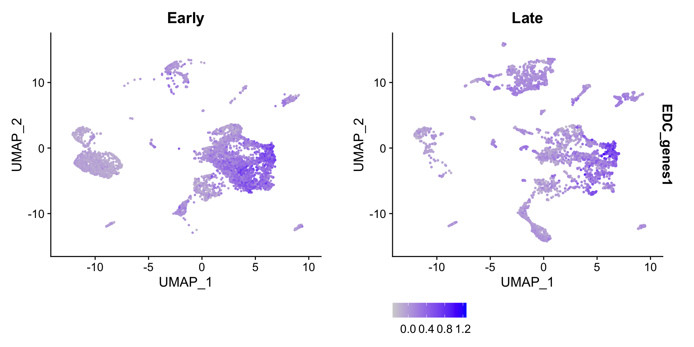
FeaturePlot(seu_int, "EDC_genes1", split.by = "Donor.gest_age") + bottom_legend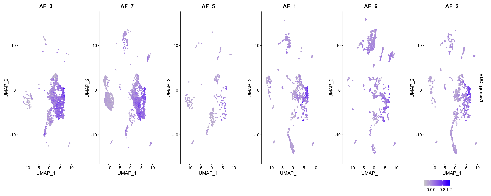
seu_int <- readRDS(here("data", "workflow", "AmnioSC_ALL_optimised_ref.Refined_labels.Seurat.rds"))
seu_int.clust1 <- seu_int[, seu_int$cluster_names == "Keratinocytes"]library(pheatmap)
annotation_df <- data.frame(Donor.Paper = seu_int$Donor.Paper,
gest_age_weeks = seu_int$gest_age_weeks,
clusters = seu_int$cluster_names,
row.names = colnames(seu_int))
annotation_df <- annotation_df[order(annotation_df$gest_age_weeks,
annotation_df$Donor,
annotation_df$clusters),]
annotation_colours <- list(Donor.Paper = ALL_DONORS_COLOURS.PAPER[unique(seu_int$Donor.Paper)],
gest_age_weeks = viridis(6),
clusters = REFINED_CLUSTER_COLOURS)
degs_to_plot <- top %>% slice_min(order_by = PValue, n = 50)
heatmap_seu <- seu_int[rownames(degs_to_plot), rownames(annotation_df)]pheatmap(GetAssayData(heatmap_seu, "data"), show_colnames = FALSE,
color = viridis(14), annotation_col = annotation_df[, "Donor.Paper", drop=FALSE],
annotation_colors = annotation_colours["Donor.Paper"],
cluster_cols = TRUE, cluster_rows = TRUE)
pheatmap(GetAssayData(heatmap_seu, "data"), show_colnames = FALSE,
color = viridis(14), annotation_col = annotation_df[, "gest_age_weeks", drop=FALSE],
annotation_colors = annotation_colours["gest_age_weeks"],
cluster_cols = TRUE, cluster_rows = TRUE)
pheatmap(GetAssayData(heatmap_seu, "data"), show_colnames = FALSE,
color = viridis(14), annotation_col = annotation_df[, "gest_age_weeks", drop=FALSE],
annotation_colors = annotation_colours["gest_age_weeks"],
cluster_cols = FALSE, cluster_rows = TRUE)
sessioninfo::session_info()─ Session info ───────────────────────────────────────────────────────────────
setting value
version R version 4.5.0 (2025-04-11)
os macOS 26.7.1
system aarch64, darwin20
ui X11
language (EN)
collate en_US.UTF-8
ctype en_US.UTF-8
tz Australia/Melbourne
date 2026-10-13
pandoc 3.10 @ /Applications/RStudio.app/Contents/Resources/app/quarto/bin/tools/aarch64/ (via rmarkdown)
quarto 1.10.18 @ /Applications/RStudio.app/Contents/Resources/app/quarto/bin/quarto
─ Packages ───────────────────────────────────────────────────────────────────
! package * version date (UTC) lib source
P abind 1.4-8 2024-09-12 [?] RSPM
P AnnotationDbi 1.72.0 2025-10-29 [?] Bioconduc~
P aroma.light 3.40.0 2025-10-29 [?] Bioconduc~
backports 1.5.0 2024-05-23 [1] RSPM (R 4.5.0)
P base64enc 0.1-6 2026-02-02 [?] RSPM
P beachmat 2.26.0 2025-10-29 [?] Bioconduc~
P beeswarm 0.4.0 2021-06-01 [?] RSPM
P Biobase * 2.70.0 2025-10-29 [?] Bioconduc~
P BiocFileCache 3.0.0 2025-10-29 [?] Bioconduc~
P BiocGenerics * 0.56.0 2025-10-29 [?] Bioconduc~
P BiocIO 1.20.0 2025-10-29 [?] Bioconduc~
P BiocManager 1.30.27 2025-11-14 [?] RSPM
P BiocNeighbors 2.4.0 2025-10-29 [?] Bioconduc~
P BiocParallel * 1.44.0 2025-10-29 [?] Bioconduc~
P BiocSingular 1.26.1 2025-11-17 [?] Bioconduc~
P biomaRt 2.66.0 2025-10-29 [?] Bioconduc~
P Biostrings * 2.78.0 2025-10-29 [?] Bioconduc~
P bit 4.6.0 2025-03-06 [?] RSPM
P bit64 4.6.0-1 2025-01-16 [?] RSPM
P bitops 1.0-9 2024-10-03 [?] RSPM
P blob 1.3.0 2026-01-14 [?] RSPM
P bluster 1.20.0 2025-10-29 [?] Bioconduc~
P bslib 0.10.0 2026-01-26 [?] RSPM
P cachem 1.1.0 2024-05-16 [?] RSPM
P Cairo 1.7-0 2025-10-29 [?] RSPM
P callr 3.7.6 2024-03-25 [?] CRAN (R 4.5.0)
P checkmate 2.3.3 2025-08-18 [?] RSPM
P cigarillo 1.0.0 2025-10-29 [?] Bioconduc~
P circlize 0.4.17 2025-12-08 [?] RSPM
P cli 3.6.6 2026-04-09 [?] RSPM
P clue 0.3-66 2024-11-13 [?] RSPM
P cluster 2.1.8.1 2025-03-12 [?] CRAN (R 4.5.0)
P codetools 0.2-20 2024-03-31 [?] CRAN (R 4.5.0)
colorspace 2.1-2 2025-09-22 [1] RSPM (R 4.5.0)
P ComplexHeatmap 2.26.0 2025-10-29 [?] Bioconduc~
P cowplot * 1.2.0 2025-07-07 [?] RSPM
P crayon 1.5.3 2024-06-20 [?] RSPM
P curl 7.0.0 2025-08-19 [?] RSPM
P data.table 1.18.2.1 2026-01-27 [?] RSPM
P DBI 1.2.3 2024-06-02 [?] RSPM
P dbplyr 2.5.1 2025-09-10 [?] RSPM
DelayedArray 0.36.1 2026-03-31 [1] https://bioc-release.r-universe.dev (R 4.5.3)
P deldir 2.0-4 2024-02-28 [?] RSPM
P dendextend 1.19.1 2025-07-15 [?] RSPM
P digest 0.6.39 2025-11-19 [?] RSPM
P doParallel 1.0.17 2022-02-07 [?] RSPM
dplyr * 1.2.0 2026-02-03 [1] RSPM (R 4.5.0)
P dqrng 0.4.1 2024-05-28 [?] CRAN (R 4.5.0)
P dynamicTreeCut 1.63-1 2016-03-11 [?] RSPM
P EDASeq * 2.44.0 2025-10-29 [?] Bioconduc~
P edgeR * 4.8.2 2025-12-23 [?] https://bioc-release.r-universe.dev (R 4.5.2)
P egg * 0.4.5 2019-07-13 [?] RSPM
P evaluate 1.0.5 2025-08-27 [?] RSPM
P farver 2.1.2 2024-05-13 [?] RSPM
P fastcluster 1.3.0 2025-05-07 [?] RSPM
P fastmap 1.2.0 2024-05-15 [?] RSPM
P filelock 1.0.3 2023-12-11 [?] RSPM
P fitdistrplus 1.2-6 2026-01-24 [?] RSPM
P forcats * 1.0.1 2025-09-25 [?] RSPM
P foreach 1.5.2 2022-02-02 [?] RSPM
P foreign 0.8-90 2025-03-31 [?] CRAN (R 4.5.0)
Formula 1.2-5 2023-02-24 [1] RSPM (R 4.5.0)
P fs 2.1.0 2026-04-18 [?] RSPM
P future 1.69.0 2026-01-16 [?] RSPM
P future.apply 1.20.1 2025-12-09 [?] RSPM
P generics * 0.1.4 2025-05-09 [?] CRAN (R 4.5.0)
P GenomicAlignments * 1.46.0 2025-10-29 [?] Bioconduc~
P GenomicFeatures 1.62.0 2025-10-29 [?] Bioconduc~
P GenomicRanges * 1.62.1 2025-12-08 [?] Bioconduc~
P GetoptLong 1.1.0 2025-11-28 [?] RSPM
P getPass 0.2-4 2023-12-10 [?] CRAN (R 4.5.0)
P ggalluvial * 0.12.5 2023-02-22 [?] RSPM
P ggbeeswarm * 0.7.3 2025-11-29 [?] RSPM
P ggplot2 * 4.0.2 2026-02-03 [?] RSPM
P ggrastr 1.0.2 2023-06-01 [?] RSPM
P ggrepel * 0.9.6 2024-09-07 [?] CRAN (R 4.5.0)
P ggridges 0.5.7 2025-08-27 [?] RSPM
P git2r 0.36.2 2025-03-29 [?] CRAN (R 4.5.0)
P GlobalOptions 0.1.3 2025-11-28 [?] RSPM
P globals 0.19.0 2026-02-02 [?] RSPM
P glue 1.8.0 2024-09-30 [?] RSPM
P GO.db 3.22.0 2026-02-03 [?] Bioconductor
P goftest 1.2-3 2021-10-07 [?] CRAN (R 4.5.0)
P gridExtra * 2.3 2017-09-09 [?] RSPM
P gtable 0.3.6 2024-10-25 [?] RSPM
P here * 1.0.2 2025-09-15 [?] RSPM
P Hmisc 5.2-5 2026-01-09 [?] RSPM
P hms 1.1.4 2025-10-17 [?] RSPM
P htmlTable 2.4.3 2024-07-21 [?] RSPM
P htmltools 0.5.9 2025-12-04 [?] RSPM
P htmlwidgets 1.6.4 2023-12-06 [?] RSPM
P httpuv 1.6.16 2025-04-16 [?] CRAN (R 4.5.0)
P httr 1.4.7 2023-08-15 [?] RSPM
P httr2 1.2.2 2025-12-08 [?] RSPM
P hwriter 1.3.2.1 2022-04-08 [?] RSPM
P ica 1.0-3 2022-07-08 [?] CRAN (R 4.5.0)
P igraph 2.2.1 2025-10-27 [?] RSPM
P impute 1.84.0 2025-10-29 [?] Bioconduc~
P interp 1.1-6 2024-01-26 [?] RSPM
P IRanges * 2.44.0 2025-10-29 [?] Bioconduc~
P irlba 2.3.7 2026-01-30 [?] RSPM
P iterators 1.0.14 2022-02-05 [?] RSPM
P jpeg 0.1-11 2025-03-21 [?] RSPM
P jquerylib 0.1.4 2021-04-26 [?] RSPM
P jsonlite 2.0.0 2025-03-27 [?] RSPM
P KEGGREST 1.50.0 2025-10-29 [?] Bioconduc~
P KernSmooth 2.23-26 2025-01-01 [?] CRAN (R 4.5.0)
P knitr 1.51 2025-12-20 [?] RSPM
P labeling 0.4.3 2023-08-29 [?] RSPM
P later 1.4.5 2026-01-08 [?] RSPM
P lattice 0.22-7 2025-04-02 [?] RSPM
P latticeExtra 0.6-31 2025-09-10 [?] RSPM
P lazyeval 0.2.2 2019-03-15 [?] RSPM
leiden 0.4.3.1 2023-11-17 [1] RSPM (R 4.5.0)
P lifecycle 1.0.5 2026-01-08 [?] RSPM
P limma * 3.66.0 2025-10-29 [?] Bioconduc~
P listenv 0.10.0 2025-11-02 [?] RSPM
P lmtest 0.9-40 2022-03-21 [?] CRAN (R 4.5.0)
P locfit 1.5-9.12 2025-03-05 [?] RSPM
P lubridate * 1.9.4 2024-12-08 [?] RSPM
P magick 2.9.0 2025-09-08 [?] RSPM
P magrittr 2.0.4 2025-09-12 [?] RSPM
P MASS 7.3-65 2025-02-28 [?] CRAN (R 4.5.0)
P Matrix 1.7-4 2025-08-28 [?] RSPM
P MatrixGenerics * 1.22.0 2025-10-29 [?] Bioconduc~
P matrixStats * 1.5.0 2025-01-07 [?] RSPM
P memoise 2.0.1 2021-11-26 [?] RSPM
P metapod 1.18.0 2025-10-29 [?] Bioconduc~
P mime 0.13 2025-03-17 [?] RSPM
P miniUI 0.1.2 2025-04-17 [?] CRAN (R 4.5.0)
P nlme 3.1-168 2025-03-31 [?] CRAN (R 4.5.0)
P nnet 7.3-20 2025-01-01 [?] CRAN (R 4.5.0)
P org.Hs.eg.db 3.22.0 2026-02-03 [?] Bioconductor
P otel 0.2.0 2025-08-29 [?] RSPM
P paletteer 1.7.0 2026-01-08 [?] RSPM
P parallelly 1.46.1 2026-01-08 [?] RSPM
P patchwork * 1.3.2 2025-08-25 [?] RSPM
P pbapply 1.7-4 2025-07-20 [?] RSPM
P pheatmap * 1.0.13 2025-06-05 [?] RSPM
P pillar 1.11.1 2025-09-17 [?] RSPM
P pkgconfig 2.0.3 2019-09-22 [?] RSPM
P plotly 4.12.0 2026-01-24 [?] RSPM
P plyr 1.8.9 2023-10-02 [?] RSPM
P png 0.1-8 2022-11-29 [?] RSPM
P Polychrome * 1.5.4 2025-04-06 [?] RSPM
P polyclip 1.10-7 2024-07-23 [?] CRAN (R 4.5.0)
P preprocessCore 1.72.0 2025-10-29 [?] Bioconduc~
P prettyunits 1.2.0 2023-09-24 [?] RSPM
P prismatic 1.1.2 2024-04-10 [?] RSPM
P processx 3.8.6 2025-02-21 [?] CRAN (R 4.5.0)
P progress 1.2.3 2023-12-06 [?] RSPM
P progressr 0.18.0 2025-11-06 [?] RSPM
P promises 1.5.0 2025-11-01 [?] RSPM
P ps 1.9.1 2025-04-12 [?] CRAN (R 4.5.0)
P purrr * 1.2.1 2026-01-09 [?] RSPM
P pwalign 1.6.0 2025-10-29 [?] Bioconduc~
P R.methodsS3 1.8.2 2022-06-13 [?] RSPM
P R.oo 1.27.1 2025-05-02 [?] RSPM
P R.utils 2.13.0 2025-02-24 [?] RSPM
P R6 2.6.1 2025-02-15 [?] RSPM
P RANN 2.6.2 2024-08-25 [?] CRAN (R 4.5.0)
P rappdirs 0.3.4 2026-01-17 [?] RSPM
P RColorBrewer 1.1-3 2022-04-03 [?] RSPM
P Rcpp 1.1.1 2026-01-10 [?] RSPM
P RcppAnnoy 0.0.23 2026-01-12 [?] RSPM
P RCurl 1.98-1.17 2025-03-22 [?] RSPM
P readr * 2.1.6 2025-11-14 [?] RSPM
P rematch2 2.1.2 2020-05-01 [?] RSPM
P renv 1.1.7 2026-01-27 [?] RSPM
P reshape2 * 1.4.5 2025-11-12 [?] RSPM
P restfulr 0.0.16 2025-06-27 [?] RSPM
P reticulate 1.44.1 2025-11-14 [?] RSPM
P rjson 0.2.23 2024-09-16 [?] RSPM
P rlang 1.2.0 2026-04-06 [?] RSPM
P rmarkdown 2.30 2025-09-28 [?] RSPM
P ROCR 1.0-12 2026-01-23 [?] RSPM
P rpart 4.1.24 2025-01-07 [?] CRAN (R 4.5.0)
P rprojroot 2.1.1 2025-08-26 [?] RSPM
P Rsamtools * 2.26.0 2025-10-29 [?] Bioconduc~
P RSQLite 2.4.5 2025-11-30 [?] RSPM
P rstudioapi 0.18.0 2026-01-16 [?] RSPM
P rsvd 1.0.5 2021-04-16 [?] RSPM
P rtracklayer 1.70.1 2025-12-20 [?] https://bioc-release.r-universe.dev (R 4.5.2)
P Rtsne 0.17 2023-12-07 [?] CRAN (R 4.5.0)
P RUVSeq * 1.44.0 2025-10-29 [?] Bioconduc~
P S4Arrays 1.10.1 2025-12-08 [?] Bioconduc~
S4Vectors * 0.48.1 2026-04-04 [1] https://bioc-release.r-universe.dev (R 4.5.3)
P S7 0.2.1 2025-11-14 [?] RSPM
P sass 0.4.10 2025-04-11 [?] RSPM
P ScaledMatrix 1.18.0 2025-10-29 [?] Bioconduc~
P scales 1.4.0 2025-04-24 [?] RSPM
P scattermore 1.2 2023-06-12 [?] CRAN (R 4.5.0)
P scatterplot3d 0.3-44 2023-05-05 [?] RSPM
P scran * 1.38.0 2025-10-29 [?] Bioconduc~
P sctransform 0.4.3 2026-01-10 [?] RSPM
P scuttle * 1.20.0 2025-10-29 [?] Bioconduc~
P Seqinfo * 1.0.0 2025-10-29 [?] Bioconduc~
P sessioninfo * 1.2.3 2025-02-05 [?] RSPM
Seurat * 4.4.0 2024-01-10 [1] https://satijalab.r-universe.dev (R 4.5.0)
SeuratObject * 4.1.4 2023-09-27 [1] https://satijalab.r-universe.dev (R 4.5.0)
P shape 1.4.6.1 2024-02-23 [?] RSPM
P shiny 1.12.1 2025-12-09 [?] RSPM
P ShortRead * 1.68.0 2025-10-29 [?] Bioconduc~
P SingleCellExperiment * 1.32.0 2025-10-29 [?] Bioconduc~
P sp 2.2-0 2025-02-01 [?] CRAN (R 4.5.0)
P SparseArray 1.10.8 2025-12-18 [?] Bioconduc~
P spatstat.data 3.1-9 2025-10-18 [?] RSPM
P spatstat.explore 3.7-0 2026-01-22 [?] RSPM
P spatstat.geom 3.7-0 2026-01-20 [?] RSPM
P spatstat.random 3.4-4 2026-01-21 [?] RSPM
P spatstat.sparse 3.1-0 2024-06-21 [?] CRAN (R 4.5.0)
P spatstat.univar 3.1-6 2026-01-17 [?] RSPM
P spatstat.utils 3.2-1 2026-01-10 [?] RSPM
P statmod 1.5.1 2025-10-09 [?] RSPM
P stringi 1.8.7 2025-03-27 [?] RSPM
P stringr * 1.6.0 2025-11-04 [?] RSPM
P SummarizedExperiment * 1.40.0 2025-10-29 [?] Bioconduc~
P survival 3.8-6 2026-01-16 [?] RSPM
P tensor 1.5.1 2025-06-17 [?] RSPM
P tibble * 3.3.1 2026-01-11 [?] RSPM
P tidyHeatmap * 1.13.1 2025-10-30 [?] RSPM
P tidyr * 1.3.2 2025-12-19 [?] RSPM
P tidyselect 1.2.1 2024-03-11 [?] RSPM
P tidyverse * 2.0.0 2023-02-22 [?] RSPM
P timechange 0.4.0 2026-01-29 [?] RSPM
P TxDb.Hsapiens.UCSC.hg38.knownGene 3.22.0 2026-02-03 [?] Bioconductor
P tzdb 0.5.0 2025-03-15 [?] RSPM
P uwot 0.2.4 2025-11-10 [?] RSPM
P vctrs 0.7.1 2026-01-23 [?] RSPM
P vipor 0.4.7 2023-12-18 [?] RSPM
P viridis * 0.6.5 2024-01-29 [?] RSPM
P viridisLite * 0.4.2 2023-05-02 [?] RSPM
P vroom 1.7.0 2026-01-27 [?] RSPM
P WGCNA 1.74 2026-01-30 [?] RSPM
P whisker 0.4.1 2022-12-05 [?] CRAN (R 4.5.0)
P withr 3.0.2 2024-10-28 [?] RSPM
P workflowr * 1.7.2 2025-08-18 [?] RSPM
P xfun 0.56 2026-01-18 [?] RSPM
P XML 3.99-0.20 2025-11-08 [?] RSPM
P xtable 1.8-4 2019-04-21 [?] RSPM
P XVector * 0.50.0 2025-10-29 [?] Bioconduc~
P yaml 2.3.12 2025-12-10 [?] RSPM
P zoo 1.8-15 2025-12-15 [?] RSPM
[1] <project>/renv/library/macos/R-4.5/aarch64-apple-darwin20
[2] <renv-cache>/sandbox/macos/R-4.5/aarch64-apple-darwin20/4cd76b74
* ── Packages attached to the search path.
P ── Loaded and on-disk path mismatch.
──────────────────────────────────────────────────────────────────────────────
sessionInfo()R version 4.5.0 (2025-04-11)
Platform: aarch64-apple-darwin20
Running under: macOS 26.7.1
Matrix products: default
BLAS: /Library/Frameworks/R.framework/Versions/4.5-arm64/Resources/lib/libRblas.0.dylib
LAPACK: /Library/Frameworks/R.framework/Versions/4.5-arm64/Resources/lib/libRlapack.dylib; LAPACK version 3.12.1
locale:
[1] en_US.UTF-8/en_US.UTF-8/en_US.UTF-8/C/en_US.UTF-8/en_US.UTF-8
time zone: Australia/Melbourne
tzcode source: internal
attached base packages:
[1] stats4 stats graphics grDevices datasets utils methods
[8] base
other attached packages:
[1] pheatmap_1.0.13 scran_1.38.0
[3] scuttle_1.20.0 SingleCellExperiment_1.32.0
[5] viridis_0.6.5 viridisLite_0.4.2
[7] reshape2_1.4.5 ggalluvial_0.12.5
[9] tidyHeatmap_1.13.1 RUVSeq_1.44.0
[11] edgeR_4.8.2 limma_3.66.0
[13] EDASeq_2.44.0 ShortRead_1.68.0
[15] GenomicAlignments_1.46.0 SummarizedExperiment_1.40.0
[17] MatrixGenerics_1.22.0 matrixStats_1.5.0
[19] Rsamtools_2.26.0 GenomicRanges_1.62.1
[21] Biostrings_2.78.0 Seqinfo_1.0.0
[23] XVector_0.50.0 IRanges_2.44.0
[25] S4Vectors_0.48.1 BiocParallel_1.44.0
[27] Biobase_2.70.0 BiocGenerics_0.56.0
[29] generics_0.1.4 sessioninfo_1.2.3
[31] here_1.0.2 lubridate_1.9.4
[33] forcats_1.0.1 purrr_1.2.1
[35] readr_2.1.6 tidyr_1.3.2
[37] tibble_3.3.1 tidyverse_2.0.0
[39] dplyr_1.2.0 Polychrome_1.5.4
[41] egg_0.4.5 gridExtra_2.3
[43] patchwork_1.3.2 cowplot_1.2.0
[45] ggbeeswarm_0.7.3 ggrepel_0.9.6
[47] ggplot2_4.0.2 stringr_1.6.0
[49] SeuratObject_4.1.4 Seurat_4.4.0
[51] workflowr_1.7.2
loaded via a namespace (and not attached):
[1] R.methodsS3_1.8.2
[2] vroom_1.7.0
[3] progress_1.2.3
[4] nnet_7.3-20
[5] goftest_1.2-3
[6] TxDb.Hsapiens.UCSC.hg38.knownGene_3.22.0
[7] vctrs_0.7.1
[8] spatstat.random_3.4-4
[9] digest_0.6.39
[10] png_0.1-8
[11] shape_1.4.6.1
[12] git2r_0.36.2
[13] deldir_2.0-4
[14] parallelly_1.46.1
[15] magick_2.9.0
[16] renv_1.1.7
[17] MASS_7.3-65
[18] httpuv_1.6.16
[19] foreach_1.5.2
[20] withr_3.0.2
[21] ggrastr_1.0.2
[22] xfun_0.56
[23] survival_3.8-6
[24] memoise_2.0.1
[25] zoo_1.8-15
[26] GlobalOptions_0.1.3
[27] pbapply_1.7-4
[28] R.oo_1.27.1
[29] Formula_1.2-5
[30] prettyunits_1.2.0
[31] rematch2_2.1.2
[32] KEGGREST_1.50.0
[33] promises_1.5.0
[34] otel_0.2.0
[35] scatterplot3d_0.3-44
[36] httr_1.4.7
[37] restfulr_0.0.16
[38] globals_0.19.0
[39] fitdistrplus_1.2-6
[40] ps_1.9.1
[41] rstudioapi_0.18.0
[42] miniUI_0.1.2
[43] base64enc_0.1-6
[44] processx_3.8.6
[45] curl_7.0.0
[46] ScaledMatrix_1.18.0
[47] polyclip_1.10-7
[48] SparseArray_1.10.8
[49] xtable_1.8-4
[50] doParallel_1.0.17
[51] evaluate_1.0.5
[52] S4Arrays_1.10.1
[53] preprocessCore_1.72.0
[54] BiocFileCache_3.0.0
[55] hms_1.1.4
[56] irlba_2.3.7
[57] colorspace_2.1-2
[58] filelock_1.0.3
[59] ROCR_1.0-12
[60] reticulate_1.44.1
[61] spatstat.data_3.1-9
[62] magrittr_2.0.4
[63] lmtest_0.9-40
[64] later_1.4.5
[65] lattice_0.22-7
[66] spatstat.geom_3.7-0
[67] future.apply_1.20.1
[68] getPass_0.2-4
[69] scattermore_1.2
[70] XML_3.99-0.20
[71] RcppAnnoy_0.0.23
[72] Hmisc_5.2-5
[73] pillar_1.11.1
[74] nlme_3.1-168
[75] iterators_1.0.14
[76] pwalign_1.6.0
[77] compiler_4.5.0
[78] beachmat_2.26.0
[79] stringi_1.8.7
[80] tensor_1.5.1
[81] dendextend_1.19.1
[82] plyr_1.8.9
[83] crayon_1.5.3
[84] abind_1.4-8
[85] BiocIO_1.20.0
[86] locfit_1.5-9.12
[87] sp_2.2-0
[88] org.Hs.eg.db_3.22.0
[89] bit_4.6.0
[90] whisker_0.4.1
[91] fastcluster_1.3.0
[92] codetools_0.2-20
[93] BiocSingular_1.26.1
[94] bslib_0.10.0
[95] paletteer_1.7.0
[96] GetoptLong_1.1.0
[97] plotly_4.12.0
[98] mime_0.13
[99] splines_4.5.0
[100] circlize_0.4.17
[101] Rcpp_1.1.1
[102] dbplyr_2.5.1
[103] prismatic_1.1.2
[104] interp_1.1-6
[105] knitr_1.51
[106] blob_1.3.0
[107] clue_0.3-66
[108] fs_2.1.0
[109] checkmate_2.3.3
[110] listenv_0.10.0
[111] Matrix_1.7-4
[112] callr_3.7.6
[113] statmod_1.5.1
[114] tzdb_0.5.0
[115] pkgconfig_2.0.3
[116] tools_4.5.0
[117] cachem_1.1.0
[118] cigarillo_1.0.0
[119] RSQLite_2.4.5
[120] DBI_1.2.3
[121] impute_1.84.0
[122] fastmap_1.2.0
[123] rmarkdown_2.30
[124] scales_1.4.0
[125] grid_4.5.0
[126] ica_1.0-3
[127] sass_0.4.10
[128] BiocManager_1.30.27
[129] RANN_2.6.2
[130] rpart_4.1.24
[131] farver_2.1.2
[132] yaml_2.3.12
[133] latticeExtra_0.6-31
[134] foreign_0.8-90
[135] rtracklayer_1.70.1
[136] cli_3.6.6
[137] leiden_0.4.3.1
[138] lifecycle_1.0.5
[139] uwot_0.2.4
[140] backports_1.5.0
[141] bluster_1.20.0
[142] timechange_0.4.0
[143] gtable_0.3.6
[144] rjson_0.2.23
[145] ggridges_0.5.7
[146] progressr_0.18.0
[147] parallel_4.5.0
[148] jsonlite_2.0.0
[149] bitops_1.0-9
[150] bit64_4.6.0-1
[151] Rtsne_0.17
[152] spatstat.utils_3.2-1
[153] BiocNeighbors_2.4.0
[154] jquerylib_0.1.4
[155] metapod_1.18.0
[156] dqrng_0.4.1
[157] spatstat.univar_3.1-6
[158] R.utils_2.13.0
[159] lazyeval_0.2.2
[160] shiny_1.12.1
[161] dynamicTreeCut_1.63-1
[162] htmltools_0.5.9
[163] GO.db_3.22.0
[164] sctransform_0.4.3
[165] rappdirs_0.3.4
[166] glue_1.8.0
[167] httr2_1.2.2
[168] RCurl_1.98-1.17
[169] rprojroot_2.1.1
[170] jpeg_0.1-11
[171] igraph_2.2.1
[172] R6_2.6.1
[173] labeling_0.4.3
[174] GenomicFeatures_1.62.0
[175] cluster_2.1.8.1
[176] DelayedArray_0.36.1
[177] tidyselect_1.2.1
[178] vipor_0.4.7
[179] WGCNA_1.74
[180] htmlTable_2.4.3
[181] AnnotationDbi_1.72.0
[182] future_1.69.0
[183] rsvd_1.0.5
[184] KernSmooth_2.23-26
[185] S7_0.2.1
[186] data.table_1.18.2.1
[187] htmlwidgets_1.6.4
[188] aroma.light_3.40.0
[189] ComplexHeatmap_2.26.0
[190] RColorBrewer_1.1-3
[191] hwriter_1.3.2.1
[192] biomaRt_2.66.0
[193] rlang_1.2.0
[194] spatstat.sparse_3.1-0
[195] spatstat.explore_3.7-0
[196] Cairo_1.7-0
[197] beeswarm_0.4.0